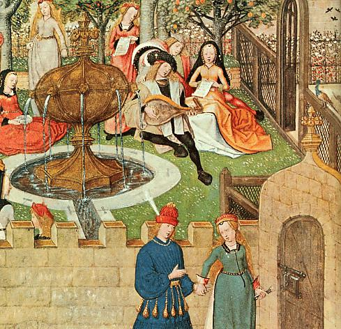

Türklerin İslam öncesi dinleri ve inanç sistemleri uzun uzun anlatılmıştı. Bilinen bir gerçektir
ki, bir toplumun kabul ettiği yeni bir din, eski inançları tümüyle ortadan kaldıramaz. Eski
inançlar çok defa yeni inancın içinde yaşamaya devam ederler. Bu manada Şamanizm'in
Türklere ait topluluklarda devam ettiğini görebiliyoruz. Ahmet Yesevi, eski Türk inanışlarını
İslamiyet ile uzlaştırmaya çalışan ve bu konuda başarılı olmuş bir kişidir.
Ahmet Yesevi, Türk toplumunun, bozkırlarda at koşturan yarı göçebe insanlar olduklarını,
kadın - erkek, genç - ihtiyar, hareketli, kendi gelenek ve göreneklerini diri tutma yolunda
başarılı ve mücadele ile geçen bir hayatın içinde olduklarını çok iyi biliyordu. Yesevi,
Türklere, fıkıh kuralları içinde ve Arap - Acem kültürü ile iç içe girmiş bir İslam yerine,
samimi ve alışık oldukları tarzda onlara hitap eden bir din ve ahlak kuralları vermiştir. Ahmet
Yesevi, Türklere kendi dilleri ile ve daha da önemlisi, onların seviyesinde bir söylem tarzı ile
dini inancı sunmanın, başarının temeli olacağını, görmüş ve uygulamıştır. Onun için de Türk
Boyları'nın halk edebiyatından alınmış şekillerle, insanlar arasında dostluğu, sevgiyi,
dayanışmayı teşvik etmiş ve dünyayı Tanrı ve insan sevgisi ile kucaklamayı öğretmiştir.
Hoca da öteki mutasavvuflar gibi, âlemi ve âlemde var olan herşeyi ilâhi aşkın eseri olarak
gördüğü içindir ki, her şeyi gönülden sevmektedir. Ancak bu sevgi ile Allah'a
ulaşılabileceğini söylemektedir. O'na göre Aşk'sız, Mevlâyı anlamak mümkün değildir.
Üstelik Aşk'sız kişi gerçek insan da değildir.
Dertsiz insan insan değil, bunu anlayın
Aşk'sız insan hayvan cinsi, bunu dinleyin
Gönlünüzde Aşk olursa, bana ağlayın
Ağlayanlara gerçek Aşk'ımı hediye eğledim.
Aşksızların hem canı yok, hem imânı,
Resûlullah sözün dedim mânâ hani.
Aşk davasını bana kılma, sahte aşık,
Aşık olsan, bağrın içinde göz kanı yok,
Muhabbetin şevki ile can vermese,
Boşa geçer ömrü onun, yalanı yok.
Aşk bağı sıkıntı çekip yeşertmesen,
166
Hor görülse nefsini öldürmesen,
"Allah" diyerek içe nuru doldurmasan,
Vallah, billah sende aşkın eseri yok.
Hak zikrini can içinden çıkarmasan,
Üçyüz altmış damarlarını kımıldatmasan,
Dörtyüzkırkdört kemiklerini kul eylemesen,
Yalancıdır Hakk'a aşık olduğu yok.
Rahatı bırakıp can sıkıntısını hoşlayanlar
Seherlerde canını incitip çalışanlar,
Hay-u heves, ben-benliği terk edenler,
Gerçek aşıktır, asla onun yalanı yok.
Kul Hoca Ahmet, candan geçip yola gir,
Ondan sonra erenlerin yolunu sor,
Allah diyerek, Hakk'ın yolunda canını ver,
Bu yollarda can vermesen, imkânı yok.
Ahmet Yesevi için ilahi aşk Allah aşkıdır. Bu aşk içinde olan kişi için bencillik, gösteriş, iki
yüzlülük, kişisel çıkar gibi küçük hesaplar yoktur.
Nerde görsen gönlü kırık, merhem ol,
Öyle mazlum yolda kalsa, yoldaşı ol,
Mahşer günü dergâhına yakın ol,
Ben - benlik güden kişilerden kaçtım ben işte.
Ahmet Yesevi’nin bütün hikmetlerinde insana büyük değer verilir. İslam tasavvufunda insan,
kâinatın kıymetlisi ve hatta özü alarak kabul edilir. Bu da insana mesuliyet yükler. İnsana
düşen, " Kamil İnsan " olmaya çalışmaktır. Bu çok yüksek bir ahlaka ulaşmak demektir.
Bunun da bir yolu yaratılmışları sevmek, incitmemek ve incinmemektir. Alçak gönüllü olan
insanlar, her hususta samimi olan kişilerdir.
Ahmet Yesevi, Allah’tan yana görünüp, aslında ahlaklı olmayan şeyhler ve mollalara karşı
çok ciddi bir mücadele yürütmüştür.
"Talibim" deyip söylerler vallah, billâh insafsız
Namahreme bakarlar, gözlerinde yok insaf;
Kişi malını yiyerler, çünkü gönülleri değil saf
Arslan Baba'nın sözlerini işittiniz teberrük.
Zâkirim deyip ağlar, çıkmaz gözünden yaşı;
Gönüllerinde gamı yok, her an ağrıya başı;
Oyun-hile kılarlar, malûm Hüda'ya işi,
Arslan Baba'nın sözlerini işittiniz teberrük.
Yesevi, cahil olmaya karşı çıkmış, inananların aydın kişiler olması gerektiğini anlatmıştır.
Ayrıca bir başka Hikmet'inde: " Bilgisizlik her kötülüğün kaynağıdır. " demiştir. Bir başka
Hikmet'inde ise:
İlim, iki inci, beden ve cana rehberdir
Can âlimi Hazret'ine yakındır
Muhabbetin şarabından içer
Öyle âlim, gerçek âlim olur dostlarım,
167
demiştir.
Yesevi öğretisinin ana ilkelerini şöyle özetleyebiliriz: “ Allah’ın varlığına ve tekliğine
inanmak, Kuran’a uymak, İslam yolunda yürümek, İnsanın kendisini disipline etmesi, Belli
zamanlarda öz eleştri yapmak. “
Ayrıca, Yesevi'liği kabul eden kişinin Hakk'ı bilmek, kalbinde Allah ve İnsan sevgisi taşımak,
cömert olmak, gerçekleri kabul etmek, geçer ve doğru bilgiye sahip olmak, kanaatkar
olmak, nefsine hakim olmak, kendini bilmek, gönül gözü ile görmek, felsefeye yatkın olmak
gibi hasletleri kendisinde toplaması gerekiyordu.
Yesevi'nin temsil ettiği İslam'ın, Şaman dini alışkanlıklarının tamamen terk edilmesini şart
koşmadığı anlatılmıştı. Bu yüzden bugün yalnızca Kazakistan'da değil, Türkistan toprakları
üzerinde yaşayan Türk topluluklarının çoğunda Şaman gelenekleri İslamiyet içinde varlığını
sürdürürler. Üstelik bu uygulamalar, Ahmet Yesevi'nin izinden gidenlerce Anadolu'ya ve
Balkanlar'a da taşınmıştır.
Ahmet Yesevi, öğretisini " Dört Kapı " olarak bilinen şu ilkeler üzerine kurmuştur: Şeriat,
Tarikat, Marifet ve Hakikat. Dört Kapı sembolizmi, İslamiyet'ten önceki Türk inançlarında da
vardır. Dört Kapı ilkesi Hacı Bektaş Veli'nin öğretisine de temel oluşturmuştur. Hacı Bektaş
Veli her bir kapıya onar makam eklemiş ve " Dört Kapı, Kırk Makam " olarak adlandırılan
ilkeler bütününü ortaya koymuştur.
Söylentiler Ahmet Yesevi’nin aynı anda birkaç yerde birden bulunma yeteneğine sahip
olduğunu anlatmaktadırlar. Mucizeleri halk arasında hala anlatılmaktadır.
168
II. Kılıç Arslan
Anadolu Selçuklu devleti Sultanı Mesut hastalanmıştı. Ölmeden önce Anadolu’yu üç oğlu
Kılıç Arslan, Şahin-Şah ve Devlet arasında bölüştürdü. Tahta da Anadolu Selçuklu Sultanı
olarak II. Kılıç Arslan’ı oturttu. Diğer oğullarını ona tabi kıldı. Kısa süre sonra 1155 yılında
Sultan Mesut öldü.
Anadolu Selçuklu Sultanı İzzeddin Mesut, Anadolu hâkimiyetini Danişmendoğullarından
tekrar Selçuklulara geri alan kişidir. Doğu Roma ile ve Haçlılarla başarılı mücadeleler
vermiştir. Müslüman olmayanlar dâhil tüm tebaasına adil davranmıştır. Konya’da ve pek çok
kentte imar faaliyetleri yapmıştır. Romalılar ülkesi diye adlandırılan Anadolu, Sultan İzzeddin
Mesut devrinde Türkiye olarak adlandırılmaya başlanmıştı. Haçlıların ve Avrupa
kaynaklarının Türkiye dediği topraklara İslam kaynakları hala Rum ülkesi (Roma) demeye
devam ediyorlardı.
II. Kılıç Arslan, Anadolu Selçuklu tahtına çıkınca ilk iş olarak, taht üzerinde hak iddia
edebilecek olan ortanca kardeşini (Devlet) boğdurarak öldürttü.
Aynı yıl, Danışmendoğlu Yağıbasan Elbistan bölgesindeki 70 bin Hıristiyan köylüyü zorla
kendi topraklarına göçtürmüştü. Zaten çiftçilere sahip olunması açısından Danışmendler ile
Rum Selçuklular arasında bir mücadele epeydir sürüp gidiyordu. Yağıbasan o kadarla da
kalmadı, Kayseri üzerine yürüdü. Tam II. Kılıç Arslan, Danişmendoğlu Yağıbasan ile
savaşacakken araya din adamları girerek savaşı durdurttular. Barış olmuş ama Hıristiyan
köylüler Yağıbasan’da kalmıştı.
Anadolu Selçuklu devletinin bu ufak sarsıntıları Ermeni prensi Toros’un kardeşi ve Büyük Selçuklu vassalı Stefan’ı cesaretlendirdi. Stefan, Maraş gibi kentlerden Müslümanları kovmaya girişti. Stefan Kılıç Arslan’ın yolda olduğunu öğrenince, Maraş’ı yağma etti. Evleri
ve alamadıkları eşyaları yaktılar, halkın büyük bir kısmını yanlarına alarak çekildiler. Stefan’a
karşı hareket eden II. Kılıç Arslan Maraş ve Göksun’a girdi. Kovulmuş olanları kente geri
getirttirdi, mal ve mülklerini iade etti.
Irak Selçuklu devletinde, hatırlanacağı gibi komutanlar iktalarını kaybetmişlerdi. Bunlar
Bağdat üzerine yürüyerek iktalarını geri almak istiyorlardı. Sultan Muhammed direniyordu.
Komutanlar Sultan Muhammed olmaksızın Bağdat üzerine yürümeye karar verdiler ama diğer
yandan da sonunda Sultanı ikna ettiler. Komutanlar, çadırları, sürüleri ve çocukları ile göçebe
Türkmenleri önlerine katarak Irak’a doğru yürüdüler. Yolda, Tekrit kalesinde hapis tutulan
Sultan Muhammed’in amcasının oğlu Arslanşah’ı hapisten çıkararak, yanlarına aldılar. Halife
ordusu ile gelenleri karşılamak üzere Bağdat dışına çıktı.
Halifenin zor durumundan faydalanmak isteyen komutanları, Halifeden yeni iktalar isteyip,
aldılar. Kuveydan Hille’yi, Mengübars Basra’yı aldı.
Irak Selçuklu komutanları ise atları ve hayvanları ile Türkmenleri ileri sürmüş, kendi
profesyonel askerlerini geride bırakmışlardı. Ama sonuçta savaşı Halifenin ordusu kazandı.
169
Türkmenler perişan oldular. Hayvanlarını, çocuklarını, kızlarını ve karılarını kaybettiler.
İnsanlar karılarını, çocuklarını tellal tutarak aramaya başladılar.
İran’da Huzistan ve İsfahan arasındaki dağlarda Lurlar yaşıyordu. Lurlar pek çok kabilenin birbirine karışmasından oluşmuş bir topluluktu. Bu topluluğu birbirine dilleri bağlıyordu.
Bugün hala bu kabileler arasında Avşar, Beğdili, Çağatay, Karabağlı gibi Türk gurupları vardır. Dilleri Kürtçeden farklıdır ama onlar kimlik olarak Kürt olmayı seçmişlerdir. Bunlar
daha önce Suriye’de bulunan Fazluye Kürtlerinin liderliğinde, 1155 yılında Doğu ve
Güneydoğu Luristan’da Büyük Lur Atabeyliğini kurdular.
Doğu Roma İmparatoru Manuel Komnenos ise, Macar savaşları sona erdikten sonra İtalya’ya karşı harekete geçmişti. 1155 yılında Ankona’ya çıkartma yaptı. Kısa süre içerisinde Apulia bölgesindeki önemli kentleri yönetimi altına aldı. Doğu Roma Tarentum’a kadar ilerlemişti.
Doğu Roma’nın başarısı Almanya’yı ve Venedik’i telaşlandırmıştı. Norman kralı 1 ci Guillaume, 1156 yılında Brindisi yakınlarında Doğu Roma ordusunu ağır bir yenilgiye uğratıp, Manuel tarafından alınan yerleri geri aldı. İmparator Manuel suların yön değiştirdiği
ve işlerin aleyhine dönmekte olduğunu görmüştü, Papa aracılığı ile Normanlarla barış
görüşmelerine başladı. Barış anlaşması uyarınca Doğu Roma Güney İtalya’dan çekiliyordu.
Bu Doğu Roma’nın dünya egemenliği konusundaki iddialarının da sonu oluyordu. 1118 ile
1176 yılları arasında gelişen olayları Doğu Roma Tarihçisi İoannes Kinnamos, Epitome adlı eserinde anlatmaktadır. Yine tarihçi Nikephoros Khoniates 1118 – 1206 yılları arasını ele
almıştır.
Papa Eugenius' ın ölümü üzerine yerine geçen yeni papa IV. Hadrianus, Alman kralı
Friedrich’e Kutsal Roma-Cermen İmparatoru tacını giydirdi (1155).
Irak Selçuklu devletinde Halife, Türkmen ve komutanları mağlup etmiştir ama Sultan
Muhammed orada durmaktaydı. Bu sırada zifaf odasından kaçan Süleyman sağda solda epey
dolaştıktan sonra Bağdat’a geldi. Halife, Süleyman’a karşı kendini emniyete aldıktan sonra,
onun taht mücadelesine katıldı. Süleyman’a vezir tayin etti ve 3 bin atlı verdi. Selçuklu
prenslerinden Melikşah’ta 2 bin atlı ile Süleyman’a katıldı. Azerbaycan’da güçlenmiş olan İl
Deniz Süleyman’ı destekledi. Sultan Muhammed’i ise Zengi soyundan Musul egemeni Ali Küçük desteklemekteydi. 1156 yılında yapılan savaşı Muhammed kazandı, yakalanan
Süleyman da Musul kalesine hapsedildi.
Azerbaycan’ı paylaşmış olan İl Deniz ve Aksungur oğlu Arslan Aba, Sultan Muhammed’den özür dilediler. Muhammed de onları affederek, anlaştı. Yerini biraz kuvvetlendirmiş olan
Muhammed, kendine vezir olarak Dergüzini ailesinden birini atadı. Vezir, başarılı bir
operasyonla komutanların iktalarını azaltarak, Sultanın has arazisini çoğalttı. Muhammed
önce Irak eyaletlerini kendine kattıktan sonra, Bağdat’ı kuşattı. Kuşatma Halifenin gemi
üstünlüğü ve erzak bolluğu nedeniyle sonuç vermiyor ve uzuyordu. Bağdat’ta enflasyon da
olmamış, sadece et ve tuz pahalanmıştı.
1156 yılında Ermeniler İskenderun’a saldırınca, Antakya Prinkepsi Renaud’un uzun zamandır
beklediği fırsat çıkmış oldu. II. Toros’un üzerine yanına Templier şövalyelerini de alarak
yürüyen Renaud, Ermenileri mağlup ederek bazı kaleleri ele geçirdi. Ele geçirdiği kaleleri
Templier şövalyelerine verdi. Bu saldırı aslında Doğu Roma İmparatoru Manuel’in istek ve
teşviki ile yapılmıştı. Ama harekâttan sonra Renaud İmparatorun sözünü tutmadığı gerekçesi
ile Ermenilerle dost oldu. Taraflar arasında anlaşma yapıldı.
170
Renaud, II. Toros’a, birlikte, Doğu Roma’ya ait olan Kıbrıs adasına baskın yapılması
teklifinde bulundu. Adaya yapılan baskın sonrası Kıbrıs tamamen yağmalandı, kadınların
ırzına geçildi, çocuklar esir alındı, tarlalardaki ürünler yakıldı, din adamlarının kulakları,
burunları kesildi. Bu baskın Kıbrıs adası için tam bir faciaydı.
1156 yılında Büyük Selçuklu Sultanı Sencer, özgürlüğüne kavuşarak, tahtına geri döndü.
Aynı yıl Harzemşahlı Atsız ölerek yerine veliaht Ebu Feth İl Arslan (1156 – 1172) geçti. İl Arslan, saltanatının hemen başlarında kendine problem yaratabilecek olan kardeş ve
amcalarını ortadan kaldırdı. Sultan Sencer de İl Arslan’ın hükümranlığını kabul etmişti.
Karahanlı topraklarında, Karluk göçebeleri ile İbrahim Han arasındaki çatışma sürüyordu.
İbrahim Han 1141 yılından beri bu topraklarda hanlık yapıyordu. Karluk birlikleri 1156
yılında İbrahim Hanı öldürüp, cesedini bozkıra attılar. Yerine geçen Ali Göksagun (1156 –
1160), Karluk şeflerinden öç alma peşine düştü. Karlukların reisi Paygu öldürüldü. Paygu
Hanın oğulları da kovalandı.
II. Kılıç Arslan Çukurova’ya girince, Ermeni prensi Toros’un kardeşi Stefan Pertus kalesine çekilmiş, sinmişti. Sonunda II. Kılıç Arslan’a itaat etti, Sultan da Konya’ya döndü (Ağustos
1157). Kılıç Arslan Güney Doğu sınırlarını Ermenilere karşı emniyete almak istiyordu. Bu
amaçla Sencer’i Ereğli’ye, Argun’u Niğde’ye, Tuğrul’u Elbistan’a emir olarak atadı. II. Kılıç
Arslan, Ermeni sorununu halletmişken Musul atabeyi Nureddin Mahmut Anadolu Selçuklu topraklarına girdi. Musul Atabeki Nureddin Mahmut II. Kılıç Arslan’ın eniştesiydi.
Doğu Roma, aslında Haçlılardan ve Kilikya Ermeni prensliğinden huzursuzdu. Onları kendi geleceği için risk olarak değerlendiriyordu. Musul atabeyi Nureddin Haçlılar ile en ciddi mücadele eden emirlikti. Bu nedenle Doğu Roma İmparatoru Manuel dışardan Nureddin’e
karşı gibi dururken, aslında onu destekliyordu. Diğer yandan II. Kılıç Arslan ile Musul
atabeyi Anadolu’nun güney doğu toprakları üzerinde çekişiyorlardı. II. Kılıç Arslan,
Nureddin’e karşı Haçlılar ve Kilikya Ermenileri ile iş birliği yapmaya hazırdı ve bunu
sağlamaya çalışıyordu. Doğu Roma ise vassalı olan Rum Selçuklularının böyle bir anlaşma
yapmasını kendi çıkarlarına aykırı sayarak, politik oyunlarla bunu önlemeye çalışıyordu.
Bütün bu politik manevralar içinde II. Kılıç Arslan Haçlılarla anlaşarak, kalabalık bir ordu ile
harekete geçince, eniştesi Nureddin Mahmut geri çekildi. Bu sırada Nureddin Mahmut’ta
Doğu Roma İmparatoru Manuel ile anlaşıp ittifak kurmuştu. İmparator Manuel, Çukurova’ya
karşı askeri bir harekâta başladı. Doğu Roma İmparatoru bağımsızlığa doğru gitmekte olan
Rum Selçuklu devletini tam kontrolü altına almak istemekteydi. Bu sıralar II. Kılıç Arslan
Danışmendoğlu Yağıbasan ve kardeşi Şehinşah ile mücadele ettiğinden, konjektür, Doğu
Roma lehine gibiydi. Ancak başkent’te çıkan bir isyan nedeniyle İmparator geri döndü.
Irak’ta ise Halifenin kışkırtması ile Şehzade Melikşah bin Muhammed ve Atabeyi İldeniz,
1157 yılında Hamedan’ı ele geçirdiler. Bunun üzerine Sultan Muhammed, Bağdat kuşatmasını kaldırarak Hamedan üzerine yürüdü. Melikşah Hamedan’ı terk etti.
1157 yılında Niksar’da Yağıbasan medresesi açıldı.
171
Sultan Sencer Kurtuluyor
3 yıldır Oğuzlar esir alıp, kaçmasın diye demir bir kafes içinde yaşamak zorunda bıraktıkları
Sultan Sencer ile beraber Horasan’da kent kent dolaşıyorlardı. Kentler de kapılarını Oğuzlara
açmıyordu. Merv, Nişabur, Tus Oğuzlarca yağmalandı, ekili araziler bozuldu, pek çok ünlü bilginler öldürüldü. Belh vali yardımcısı hariç, bütün eski Selçuklu yüksek bürokratları
Oğuzlarla iş birliğine girmediler. Böylece Oğuzlar organisazyonlar karşısında deneyimsiz
kaldılar. Böylece ne eşraftan ve ne de yüksek memurlardan destek alamayan Oğuzlar da
çareyi, yakıp, yıkıp, öldürerek yani korkutarak sindirmekte buldular. Oğuzların başarısız
kalmasını Ravendi “ adalet temelini düzeltemediler “ diye ifade ediyordu.
Şair Enveri durum hakkında yazdığı bir kaside de olup bitenleri şöyle anlatıyordu:
“ Bütün İran’dan eser kalmamıştır, baştanbaşa harap olmuştur. Müslümanlar için burada sağ
salim yaşama ümidi tükenmiştir. Genç ve zenginler bir yolunu bulup kaçmışlar, yaşlı ve
fakirler ortada kalmışlardır. Eskiden şekeri nazlı yiyenler şimdi arpa ekmeğini
bulamamaktadırlar. Atlas döşeklerde yatanlar şimdi keçe bulamamaktadırlar. Halk, gece ve
gündüz feryat ederek ağlamaktadır. Küçükler büyüklere baş, alçaklar ululara üst olmuştur.
Özgür insanlar, ekmek derdiyle şaşkın, dindar insanlar rintlerin elinde tutsaktır. Camiler,
Oğuz atlarının bağlantı yerleri olmuştur. Horasan’da Oğuz adına hutbe okunmuyor. Zira şimdi
ne hatip, ne de minber vardır. Büyük aile çocukları türlü biçimlerde öldürülmüşlerdir. “
Oğuzlar Enveri’nin anlattığından fazlasını yapıyorlardı. Camiye sığınan halklar Cami ile
birlikte ateşe veriliyor, zenginlere servetlerinin yerini söyletmek için toprak yedirerek işkence
ediliyordu.
Enveri dâhil pek çok insan Horasanın artık kendi kendine kurtulamayacağı, dışardan yardım
gelmesi gerektiğini düşünüyorlardı. Bölgede Nişabur’da bulunan Karahanlı Mahmut vardı ki
bunu Selçuklu ailesi de destekliyordu. Tus, Nesa ve Abiverd’i elinde tutan Sencer’in
komutanlarından Ay-aba vardı. Oğuzlar ise Belh, Merv ve Serahs bölgesindeydiler. Bu sırada
iyice kuvvetlenmiş olan Harzemşah Atsız, Horasan’ı ele geçirmeyi düşünüyordu. Ama
Oğuzları hala güçlü gördüğünden, harekete geçmeden Oğuz konfederatif birliğinin
dağılmasını bekliyordu. Aslında Oğuzlar da müttefik arayışı içindeydiler. Hazar denizinin
güneyinde bulunan Taberistan bölgesini yüz yıllardır Bavendi ailesi, yöresel egemen olarak
yönetiyordu. Oğuz şefleri ayrı ayrı Bavendi’ye mektup yazarak ittifak önerdiler. Beraberce
Batı İran ele geçirilecekti ve Bavendi’ye Horasan’dan da pay verilecekti. Bavendi tüm bu
ittifak önerilerini ret etti.
Harzemşahlar tam Oğuzlara karşı bir koalisyon hazırlarken, Sultan Sencer, nöbetçileri
kandırarak kaçmayı başardı. Ama 72 yaşında ihtiyar ve güçsüzdü. Geçirdiği son 3 sene onu
iyice hırpalamıştı. Sencer bir süre Tirmiz’de kalıp, sonra Merv’e döndü. Ama artık güç
Harzemşah Atsız’daydı.
172
Atsız’ın Mektubu
Harzemşah Atsız Horasan’daydı. Oğuzlar Belh bölgesindeydiler. Atsız, Oğuz beylerinden Tuti Beye, bir diplomasi örneği sayılan, bir mektup yazdı. Mektupta Sultan Sencer’in tutsak
edilmesine hiç değinilmiyordu. Bu mektuba göre:
“ Oğuzlar Horasan’a gelmişler, cihan egemeni olarak geniş topraklara sahip olan Sencer,
Oğuzları kendi mülkü saydığı ve onlara acıdığı için oturmak üzere aralarına gelmişti. Ama
Oğuzlar bunu değerlendirememiş ve gerekli saygıyı gösterememişlerdi. Sultan da yanlarından
ayrılıp, onları yalnız bırakmıştı.
Şimdi Atsız, Tuti’ye ne yapmayı düşündüğünü soruyordu. Artık Oğuzlar bir kentten diğerine
dolaşamazlardı. Daha önce yanlarında Sultan olduğu için kentler onlara kapılarını açıyorlardı.
Ancak şimdi kimse onları kendine yaklaştırmazdı. Belh’e de yerleşemezlerdi. Şimdi Sultan
yanlarında olmadığına göre, ondan izin almadan Belh’de bulunamazlardı. Eyaletler Sultana
aitti ve ancak onun izni ile yerleşilebilinirdi.
Oğuzların yapabilecekleri tek şey kalmıştı: Sultandan özür dileyip, itaatlerini sunmak. Bunu
yaparlarsa Mahmut Han, Harizm, Seistan ve Gur egemenleri, Oğuzlar için Sultan katında şefaatte bulunacaklardı. Oğuzlara bir yurt sağlanacaktı. “
Ancak bu mektubun yazılmasından az sonra Atsız ve ondan kısa süre sonra da Sencer öldüler.
173
Sultan Sencer’in Ölümü
1157 yılında Büyük Selçuklu Sultan Sencer öldü. Geçirdiği yılların acısını ve görevinin
ağırlığını daha fazla taşıyamamıştı. Onun ölümünden sonra iyice marjinal olmuş olan Haşhaşi
hareketi de simgeselleşti. Sultan Sencer, kardeşi Berkyaruk’un veziri Nizamülmülk’ün
oğullarından Fahrülmülk’ü kendine vezir seçerek, Selçukluların devleti Nizamülmülk ailesi
ile birlikte yönetme geleneğini devam ettirmişti. Fahrülmülk 10 yıl Sultan Sencer’e vezirlik
yaptıktan sonra ölünce, yerine oğlu Sadrüddin vezir oldu. 11 yıl vezirlikten sonra o da ölünce,
vezirliğe Nizamülmülk’ün yeğeni (kardeşinin oğlu) Şahabülislam seçildi. Şahabülislam Sultan
Sencer’e vezirlik yaparken, Irak Selçuklu devleti Sultanı Mahmut’un veziri de yine
Nizamülmülk ailesinden Ahmet’ti. Sultan Sencer’in son günlerinde, vezir olarak
Fahrülmülk’ün oğlu uzun süre görev yapmıştır. Yani Nizamülmülk’ün kendi 29 yıl vezirlik
yapıp devleti yönetmiş, ölümünden sonra ailesi daha uzun yıllar, nesilden nesile devleti
yönetmeye devam etmişlerdir.
Bu tarihlerde Kudüs krallığı ekonomik sıkıntı içindeydi. Türkmen ve Arap göçebe
kabilelerine Baniyas kenti yakınlarındaki otlakları kiraladı. Türkmenler otlakta hayvanlarını
otlatırken, Kudüs Kralı aniden üzerlerine saldırarak, Türklerin çoğunu öldürdü ve
hayvanlarına el koydu. Katliama katılan herkese çok miktarda hayvan düşmüştü. Böylece
genel bir rahatlama oldu. Bu olay çağdaş tarihçiler tarafından utanç içinde anlatılmıştır. Bu
olay gibi zaman zaman Haçlılar göçebeleri yağmalasalar bile, genelde onların askeri ve
ekonomik güçleri nedeniyle iyi geçinmeyi tercih etmişlerdir.
Sultan Sencer’in yerine III. Tuğrul (1157 – 1194) geçti. Sultan unvanı da III. Tuğrul’un 1194
yılındaki ölümüne kadar resmen kullanılmaya devam edildi. Sencer’in ölümü ile Doğu
İran’da (Horasan) Selçuklu etkisi kalmamıştı. Harzemşahların Selçuklu vassallığı nerede ise
bitmişti. Ama İl Arslan döneminde de Harzemşahlar Karahitaylara vassal olarak kalmayı sürdürdüler. Ancak bir vassal olarak bile çok güçlüydüler. Horasan ve Nehirler arasının bir
kısmı Harzemşah hâkimiyetindeydi. Saygı duyulan ve çekinilen bir devlet durumuna
gelmişlerdi. Bağımsızlığa doğru ciddi adımlar atmıştı.
174
Kilikya Ermenileri Doğu Roma’ya karşı
Doğu Roma Batıda meşgulken, hatırlanacağı gibi
Ermeni prensi Toros (Thoros), isyan etmişti. Onu yola getirmek için yollanan iki Doğu Roma
ordusunu da yenmişti. Sonra Toros (Thoros),
Antakya prensi Renaud ile anlaşmıştı. Thoros
Kilikya’da, Renaud Kıbrıs’ta kendileri açısından
başarılı sonuçlar almaya başlamışlardı. Bunun
üzerine 1158 yılında İmparator Manuel Komnenos, Kilikya üzerine bizzat yürüdü. İmparatorun
hazırlıkları ve seferi o kadar sessiz ve ani olmuştu
ki, Toros İmparator kendisine 1 günlük yolda iken
haberi oldu. Thoros dağlara kaçtı ve Kilikya tekrar
Doğu Roma’ya bağlandı. Bu durumda Renaud’da
Doğu Roma şemsiyesini kabul etmek zorunda kaldı.
Araya Haçlı büyüklerinin girmesi ile İmparator
Ermeni prensi II. Toros’u affetti. Toros da
İmparatorun ayağına gelip hem af diledi ve hem de
biat etti. Bunun üzerine İmparator II. Toros’a kıyı
kentleri Doğu Roma komutanlığı görevini verdi.
Doğu Roma ordusu geri çekilir çekilmez, Toros
verdiği sözü tutmayıp, kaybettiği kale ve kentleri
geri almaya başladı. Gerekçe olarak kardeşi
Stephan’ın Tarsus kent kapısında ölü bulunmasını
gösteriyordu. Aslında Stephan’ın ölümü Toros’un
işine geliyordu ama bunu kullanmaktan geri
Manuel Komnenos
duramazdı. Doğu Roma kuvvet kullanarak Çukurova
Ermenilerini dize getiremeyeceğini anlamıştı. Şimdi
kiliselerin birleşmesi üzerinde çalışmaya başladılar.
175
Oğuzlar Dert
1158 yazında, Oğuzlar Büyük Selçuklu başkenti Merv’i ele geçirdiler. Horasan egemeni kabul
edilen Karahanlı Mahmut ve esas gücü elinde bulunduran Ay-aba, Oğuzları Merv’den
çıkarmak üzere hareket ettiler. Ancak Oğuzlar onları ağır bir yenilgiye uğrattı. Mahmut
Gürgan’a kaçtı. Oğuzlar birçok kere yaptıkları gibi tekrar Serahs ve Tus bölgelerini yağmaladılar.
Horasan’da iyice güçlenmiş olan Oğuzlar kendi içlerinden bir Sultan çıkaramıyorlardı. Belki
de meşrulaşmak için meşru bir sultan arıyorlardı. Gürgan’da bulunan Karahanlı Mahmut’a
haber yolladılar. Mahmut yanıt vermeyince, Mahmut’tan oğlunu istediler. Bu sefer Mahmut
oğlunu yolladı. Oğuzlar da onu Oğuz hükümdarı olarak Merv’de tahta oturttular. Yeni Sultanı
Tus tanımadı. Oğuzlar Tus’u eskilerinden daha sert yağmaladılar. Bu sırada Mahmut,
Oğuzların kendine yaptıkları öneriyi kabul ederek onlarla birlikte Merv’e döndü. Nişabur’a
hâkim durumdaki Ay-aba Oğuzlara karşı direniyordu.
Bu sırada Harizm egemeni olan İl Arslan, Irak Selçuklu Sultanı Muhammed’i metbu (Tabi olunan) olarak tanımıştı. Horasan ile ilgili Muhammed’e mektup yazdı: “ Yalnız Sultan
Muhammed, Horasan’ı yol kesen dağ haydutlarından (Oğuz) ve Maveraünnehir’i kâfir
boyunduruğundan (Karahitaylar) kurtarabilir. “ Muhammed, ordusu ile geleceğini bildirdi,
ama kendi durumu sallantıda olduğundan gidemedi. İş Harzemşahlı İl Arslan Han’a kalmıştı.
Hatırlanacağı gibi Karahanlı topraklarında Ali Göksagun, Karluk şefini öldürüp, oğullarını kovalamıştı. İçlerinde Laçin de olan oğlanlar İl Arslan’a sığınmışlardı. Hatırlanacağı gibi
Karahitaylar güçlerini göçebe kabilelerden almaktaydılar. Onlar Karluk başkaldırısına
müsaade edemezlerdi. Karahitay hükümdarı buyruğunu verdi: Karluklar Maveraünnehir’den
sürülecek, askerlikten menedilecek ve yerleşik yaşama geçirileceklerdi. Karluklar direndiler.
Karluklarla Göksagun arasında kanlı mücadeleler başladı. Karlukların koruyucusu durumuna
gelmiş olan İl Arslan da müdahale etmek zorunda kaldı.
İl Arslan 1158 yılında Göksagun’un üzerine yürüdü. Karahanlı hükümdarı da göçebe Türkmen ve Karahitaylardan yardım istedi. Buhara yakınlarında yapılan savaş Karluk ve
Harzemşah aleyhine sonuçlandı. Bu savaştan sonra önce Karahanlı hükümdarı Göksagun ve
sonra onu takip eden Kılıç Tamgaç Han, hem Karlukları ve hem de Maveraünnehir de kalmış
diğer Oğuzları cezalandırmaya başladılar.
Bu sırada Kutsal Roma Germen İmparatoru Friedrich, Almanya’daki iç sorunların bir kısmını
çözdükten sonra 1158'de İtalya'ya ordusu ile beraber girdi. İtalyan kentlerini kendisine
bağladı. Friedrich'in bu uygulamaları, hem İtalyan devletleriyle ve hem de Papalıkla arasını
açtı.
176
Antakya Roma’nın
Sicilya Kralı Guglielmo I.
İmparator Manuel Komnenos Kilikya’nın alınışından bir yıl sonra büyük bir törenle
Antakya’ya girdi. Bu sırada, Kudüs kralı 3 cü Baudouin, İmparatoru ziyaret ederek, o da
Doğu Roma’nın yüksek egemenliğini kabul etti. 1159 Kilikya seferinden dönen Doğu Roma
ordusu, Türkmenlerin saldırısına uğradı ve epey kayıp verip, hırpalandı. Bu saldırılardan
Anadolu Selçuklu devletini ve II. Kılıç Arslan’ı sorumlu tutan Manuel, Kılıç Arslan’a karşı
bir cephe kurdu. Manuel Komnenos, Haçlılarla, Kılıç Arslan’ın kardeşi Ankara ve Çankırı
Meliki Şehin-Şah’la ve Danişmendilerle (Zünnun, Zülkarneyn ve Yağıbasan) Selçuklulara
karşı ittifak yaptı (1160). Musul atabeyi Nureddin ile Doğu Roma zaten anlaşmışlardı. Şimdi
Roma Selçuklu devletinin etrafı ittifak yapmış olan düşmanlarınca çevrilmişti. Bu ittifak
karşısında II. Kılıç Arslan anlaşma yolları aradı ise de olumlu bir yanıt alamadı.
Japonya’da merkezi hükümetin eyaletler üzerindeki gücü iyice azalmıştı. 1159 Heiji
savaşından sonra Taira Kiyomori başkanlığında Taira klanı yönetimi ele geçirdi.
Papalık, 1159'da Kardinal Rolando'yu Papa III. Alexander adıyla Papa seçti. Ancak Alexander'ı tanımayan Friedrich, kendisinin desteklediği Kardinal Ottaviano' yu Papa IV.
Victor adıyla papa seçti (1160).
Sicilya kralı I. Guglielmo'nun da desteklediği Roma'daki Papa Alexander, 1160'ta Friedrich'i aforoz etti. Avrupa'daki büyük devletlerin çoğunluğu, hatta Bizans imparatoru I. Manuel
Komnenos bile Alexander'ı destekliyordu. Alexander, Fransa'ya giderek Kral VII. Louis'yi kendisini desteklemesi için ikna etti. Almanya’da Friedrich'ten sonra en güçlü prens olan
Saksonya dükü ve Friedrich’in kuzeni Aslan Henrinch ile de ittifak yaptı. İtalyan kentleri bu süreçte, iki taraf arasında karşılıklı saf tuttular. Bizans imparatoru I. Manuel, Fransa'yla ittifak
kurarak papayı tanımaya hazırlanırken Friedrich 1162'de Milano'yu yerle bir etti.
177
Kılıç Arslan Constantinopolis’de
Erzurum emiri İzzeddin Saltuk’un kızı II. Kılıç Arslan’ın karısı olmak üzere gelin alayı ile
yola çıkmıştı. Hatun Konya’ya gelirken Danişmendoğlu Yağıbasan tarafından kaçırılarak,
kardeşi Danişmendoğlu Zünsun ile evlendirildi. Bu durumda Yağıbasan’a karşı askeri
harekâta kalkışan II. Kılıç Arslan yenildi. Bundan sonra Kılıç Arslan diplomatik bir atağa
kalkarak, Doğu Roma ile ilişkilerini kuvvetlendirmeye girişti.
1160 yılında veya Aralık 1159 da Irak Selçuklu Sultanı Muhammed 2 senedir yakalanmış
olduğu verem hastalığı nedeniyle öldü. Sultan Mesut’un askersiz, gelirsiz diye başa geçirdiği
Halife Muktefi, Irak’ın kuvvetli devlet adamı olmuştu. Halife Selçukluların bir daha Bağdat
ve Irak’a gelmesine müsaade etmedi. Hapisten çıkardığı Süleyman’ı Selçuklu Sultanı ilan etti.
Taht üzerinde şimdi Süleyman’la birlikte İldeniz’in desteklediği Arslanşah (İl Deniz,
Arslanşah’ın annesi ile evlidir), İsfahan’daki Melikşah hak sahibidirler. Melikşah Halifeyi
tehdit etti. Halife de, Melikşah’a bir cariye yolladı. Cariye ete zehir karıştırarak Şehzadeyi
öldürdü (1160). Böylece yılanın başı kalkmadan ezilmişti. Ancak, Halife Muktefi de öldü.
Halifenin yerine oğlu Müstencid geçti (1160 – 1170). Müstencid, babasının politikasına devam ederek, Selçukluları ne Bağdat’a ve ne de Irak’a sokmadı.
Süleyman’ı önemli komutanlardan İnanç destekliyordu. İnanç kendi iktasına dönünce, diğer
komutanlar, İldeniz’in etkisi ile Süleyman’ı öldürdüler, yerine İldeniz’in Atabeyi olduğu
Arslanşah çıktı. Yine taht kavgaları başlamıştı, kuvvetli komutanlar kendilerine birer şehzade
bularak, saltanat savaşlarına katıldılar. Halife de savaşları körüklüyordu. Sonunda Arslanşah
tahtta kaldı, bütün yetki İldeniz’deydi. İldeniz, Dede Korkut masallarında “ 60 bin kâfire kan
kusturan Gaflet Koca oğlu Şer Şemseddin “ diye geçer. Kıpçak kökenli, kölelikten gelme bir
komutandı. İl Deniz devleti her açıdan bildiği gibi yönetiyordu.
1160 yılında Horasan’da sadece Sultan Sencer’i esir almış olan Belh Oğuzları değil, başka Oğuz gurupları da vardı. Nesa bölgesinde Yazır boyundan bir Oğuz topluluğu bulunuyordu.
Yazırlar o kadar çok karışmışlardır ki artık saf bir Oğuz boyu olmaktan çıkmışlardır. Ayrıca
inanılmaz kalabalıklaşmışlardı. Bu nedenlerle, Yazırlar sanki Oğuzlardan ayrı bir halk gibi ele
alınır. XIII. Yüzyıla ait bir coğrafya yapıtı Yazırlar hakkında şu bilgiyi vermektedir: “
Yazırlar, bir Türkler kabilesidir. Onlar Balhan’a ve oradaki dağların sınırına geldiler. Orada
biri Mangışlak’tan diğeri Horasan’dan gelen iki kabile ile birleştiler. Sayıları çoğaldı ve
güçlendiler. Bulundukları yeri terk ederek, Şahristan ve Kızılarvat sınırlarına geldiler ve daha
sonra Tek’e yerleştiler. Şimdi onların içinde şu alt guruplar vardır: Saf Yazırlar,
Mangışlak’tan gelenler ve Persli olanlar. “ Bu Yazırların başında Yağmur Han bulunuyordu.
178
Önemli bir Oğuz gurubu da Hazar Denizinin güneydoğusunda yer alan Dihistan bölgesindeki
Oğuz gurubudur. Bu gurubun başında Aytak Han vardı. Aytak Han 10 bin atlı savaşçıya
sahiptir. Bundan başka da bir sürü Oğuz gurubu Horasan da dolaşmaktaydı.
Karahanlı Sultan Mahmut’u başlarına geçiren Oğuzlardan, Sultan Mahmut sıkılmıştı. Kaçarak
Ay-aba’ya sığındı. Ay-aba onun ve oğlunun gözüne mil çekip, sonra da öldürdü. Böylece
Karahanlıların Batı kolu son buldu. Sultan Sencer ölmüştü, Sultan Mahmut ölmüştü. Her kent kendi başına bir Oğuz beyi tarafından yönetiliyordu.
Tomar kalesi
Portekiz’de ise tapınak şövalyeleri kuvvetleniyorlardı. 1160 yılında, günümüze kadar gelmiş
olan Tomar Kalesini, tarikatın Portekiz merkezi olarak inşa ettiler.
1161 yılında Macar kralı 2 ci Geyza öldü. Doğu Roma İmparatoru Manuel, babası gibi, Macar
tahtına karışma hakkı olduğunu düşünüyordu. Macaristan’da Geyza’nın oğlu III. Stephan
tahtın varisiydi. Ama 3 cü Stephan ile Geyza’nın kardeşleri IV. Stephan ve Ladislaus arasında taht mücadelesi başladı. Manuel Komnenos, IV. Stephan ile Ladislaus’u destekliyordu.
Orta Asya’da Moğollar ile Kin hanedanı İmparatorluğunu barış halinde iken bırakmıştık.
Moğolların başında Cengiz Han’ın dedesinin kardeşi Kutula Kağan vardı. Kin İmparatoru Moğollar ile barış yapmıştı ama onları daha ufak bir toplulukken tam denetimi altına almak
istiyordu. Kin İmparatoru Tatarları ileri sürdü. Bugün Moğol ve Tatar aynı ulusu gösterirken,
o günlerde Tatarlar ve Moğollar iki ayrı kabileydiler. Tatarlar Moğollara saldırıp, onları
dağıttılar. Kutula Kağanın kardeşi ve yeğeni Tatarlara esir düştü. Tatarlar, bu iki kıymetli
tutsağı Çin’e teslim ettiler. Çin de onları tahtadan bir eşeğe çivileyerek cezalandırdı. 1161
yılındaki bu bozgundan sonra, zaten yeni olan Moğol siyasi birliği dağıldı. Boylar kendi
alanlarına çekildiler. Artık Cengiz’in babası Yesügey sadece “ bahadır “ (ba’atur) unvanı taşıyan bir Moğol soylusuydu.
Anadolu’da Türk beylikleri ile Gürcü krallığı arasındaki mücadele devam ediyordu.
Hatırlanacağı gibi Gürcüler bir ara Saltuklu beyliği beyi İzzeddin II. Saltuk’u esir alıp, fidye karşılığı serbest bırakmışlardı. 1161 yılına geldiğimizde, daha sonra Gürcü kralı olacak olan
Giorgi, Anı kentini işgal etti. Bunun üzerine İzzeddin Saltuk, Ahlat beyi II. Sökmen, Erzen beyi Devletşah, Artukoğulları Mardin beyi Necmeddin Alp ve başka Türk beyleri, Gürcülere 179
karşı Ani kentini geri almak için sefere çıktılar. Ani kuşatıldığında, daha önce tutsaklığı
sırasında Gürcü kralına Gürcülerle savaşmayacağına dair yemin etmiş olan İzzeddin Saltuk,
ordudan ayrıldı. Böylece güçten düşen Türk kuvvetleri Gürcüler karşısında ağır bir yenilgi
daha aldılar. Çok sayıda Türk savaşçısı öldü, bir kısmı da Gürcülere esir düştü (Ağustos
1161).
Bu sırada II. Kılıç Arslan etrafını çevirmiş olan düşmanlarına karşı diplomatik ataklar
yaparak, çemberi gevşetmişti. Kimine toprak vermiş, kiminle onlar lehine anlaşmalar
yapmıştı. Nureddin ve Şehinşah’ın ele geçirdikleri yerleri, Danışmendoğullarının Ceyhan’ı almalarını kabullenmişti. Doğu Roma ile arada gidip gelen aracılar vasıtası ile nerede ise
anlaşmıştı. Doğu Roma tutsaklarını bırakacaktı, Doğu Roma hudutlarını tanıyacaktı, hudutlara
saygılı davranacaktı, ele geçirdiği kentleri iade edecekti, İmparatorluğun düşmanlarına karşı
savaşacaktı, gerekirse Manuel Komnenos’a askeri yardım yollayacaktı. Şimdi 2 sene öncesi gibi sıkışmış değildi.
1162 yılında II. Kılıç Arslan, anlaşma herhangi bir kim vurduya gitmesin diye Doğu Roma
İmparatoru ile doğrudan görüşmek istedi. Hıristiyan veziri Kristofer’i Constantinopolis’e
yolladı. Her şey ayarlandı ve Constantinopolis’e gitti. II. Kılıç Arslan, başkentte büyük bir
törenle karşılandı. İki hükümdar karşılıklı olarak daha önce ana çizgilerinde antant kaldıkları
hususlarda bir anlaşma imzaladılar. II. Kılıç Arslan böylece Anadolu’daki bütün öteki
rakiplerine karşı dilediği gibi davranma özgürlüğü elde etmiş oluyordu.
1162 yılında Kudüs Kralı III. Baudouin öldü. Yerine kardeşi I. Amaury geçti. Şimdi Amaury ile Nureddin arasında Mısır’ın hâkimiyeti mücadeleleri başlayacaktı.
1162 yıllarında Gürcülerin
Selçuklu topraklarına yaptıkları
akınlar artmıştı. Gürcüler Gence
yöresinde pek çok tahribat
yaptılar. Dovin ve köylerinde
10 bin kişi öldürüldü. Pek çok
kadın tutsak edildi. Tutsakları
çırılçıplak soyup, yalın ayak
götürdüler. Bu uygulamaya
Gürcü kadınlar karşı çıkarak
“sizin onlara yaptıklarınız
birgün bize de yapılır “ diyerek,
esirleri giydirdiler.
1162 yılında Konya’da Ebu Sait
İplikçi Camisi
Altınapa tarafından
İplikçi
Camii yaptırıldı.
180
Haşhaşinlerle mücadele
1162 yılında Macar tahtına Stephen ( Stefan) III. Stephan adıyla çıktı (1162 – 1172). Tahta küçük yaşta çıkmıştı, onu amcalarına karşı korumak zorunda kaldı. Bu mücadeleler sırasında
Hırvatistan ve Dalmaçya kıyılarını Doğu Roma İmparatorluğuna bırakmak zorunda kalacaktı.
1163 yılında Batı Karahanlı toprakları Kara Hitayların egemenliği altına girdi.
Gürcülerin yaptıkları Selçukluların harekete geçmesine sebep olmuştu. Sultan Arslanşah,
İldeniz’le beraber Gence’ye gitti. Selçuklu ordusuna orada II. Sökmen, Fahreddin Devletşah
ve Arslanapa gibi çevre emirleri kuvvetleri ile birlikte katıldılar. Gürcüler, Selçuklu
ordusunun gücü karşısında barış teklifinde bulundular. Emirler bu barış önerisini kabul
etmeyerek, intikam istiyorlardı. Lukri kalesi civarında yapılan savaşı Selçuklu kuvvetleri
kazandı (Temmuz 1163). Gürcü kralı kaçtı. Bu sefer Selçuklu askerleri Gürcü topraklarına
girerek, yağma yaptılar ve çok sayıda esir aldılar. Saltuklu beyi İzzeddin II. Saltuk’un bu yağma seferlerine iştirak edip, etmediği bilinmemektedir.
Doğu Roma ile anlaşma imzalayan II. Kılıç Arslan Yağıbasan’ın üzerine yürüdü. Yağıbasan,
Kılıç Arslan’ın kardeşi Şahin-Şah’ın kayınbabasıydı. Bu harekâtı sırasında Harput Artuklu
emiri Kara Arslan, Mardin emiri Necmeddin Alp ve Bitlis emiri Fahreddin Devlet-Şah Kılıç
Arslan’a yardım ettiler. Yağıbasan, Ankara’ya damadının yanına çekildi. Orada Ağustos 1164
tarihinde öldü.
Aynı yıl II. Hasan Haşhaşinlerin lideriydi. Buzurg Ummid’in oğlu Muhammed, onun da oğlu II. Hasan’dır. Daha Muhammed sağ ve Haşhaşinlerin lideri iken, II. Hasan halk üzerinde
etkiliydi. Halkın bir kısmı II. Hasan’ı beklenen İmam kabul edince, baba Muhammed çok
sinirlenerek. II. Hasan’ı İmam kabul edenleri öldürttü. “ Bu Hasan, benim oğlumdur. Ben de
İmam değilim. İmamın bir daisiyim. Bu sözleri kim dinler ve inanırsa kâfirdir ve dinsizdir. “
diye halka buyruk yayınladı. II. Hasan kendini İmam ilan edenleri lanetliyerek, ölümden
kurtuldu. Ama babası ölüp, Hasan başa geçince farklı davranmaya başladı.
II. Hasan yandaşları hiçbir şeriat hükmünü yerine getirmiyorlardı. Günah işlemeyi ve şarap
içmeyi, beklenen imamın alametleri sayıyorlardı. II. Hasan 1164 yılı Ağustos ayında bir “
kıyamet festivali “ düzenledi. Açık havada kıbleye ters yönde bir minber kurup, halkı topladı.
Minber de halife Nizar soyundan bir İmamın hutbesi okundu. Bu hutbeye göre Hasan Sabah
hüccet, babası Muhammed dai, II. Hasan ise halife ve Nizar’ın sözcüsüdür. Yani en üst rütbe
II. Hasan’dadır. Bu inanışa göre, Hasan babasının çocuğu değildir. Halife Nizar’ın torununun
181
oğludur. Nizar’ın torunu Alamut’a gelmiş, Muhammed’in karısı ile zina etmiş ve II. Hasan doğmuştur. Başka bir inanışta ise Muhammed’in karısı kendi çocuğu Hasan ile Nizar
soyundan gelen Hasan’ı çocukken değiştirmiştir.
Böylece II. Hasan İmamlık iddiasında bulunmuş ve bunu sürdürmüştür. Kendinden sonra 44
yıl Haşhaşin liderliği yapan oğlu da imamlık iddiasını sürdürmüştür.
1164 yılında Alman İmparatoru Friedrich'in desteklediği Papa IV. Victor öldü. Friedrich
Barbarossa bunun üzerine III. Paschalis' i yeni papa seçti ve III. Alexander'ı tanımamaya devam etti ve bu konuda yemin etti.
Arslanşah ve İldeniz, Gürcülerle uğraşırken, Haşhaşinler Kazvin yöresinde sarp dağların tepelerine 3 yeni kale inşa etmişlerdi. Daha sonra Arslanşah ve İldeniz Kazvin’de
Haşhaşinlerin üzerine yürüyüp, kuşattılar. Selçuklu ordusu yardıma geldi. Dört ay içinde,
Kazvin çevresindeki tüm kaleleri ele geçirdi (1165).
Macar Kralı III. Stefan
182
Moğollar
İl nehri
Orta Asya uçsuz bucaksız Hun devletini, Juan-Juanları, Göktürkleri (Tukiuleri) doğurmuştu.
Bu topraklarda 1.000 yıldan uzun bir süredir Türk hâkimiyeti vardı. Ama şimdi göçebe
İmparatorluklarının çıktığı Orhon ve Selenga kıyıları yeni bir potansiyel enerji ile doluyordu.
Türkler Orta Asya’nın göbeğinde iyice azalmışlardı. Onlar Batıya, Güneye yani çevreye
gitmişler, ortayı Moğollara bırakmışlardı.
Moğollar Türklerle akrabaydı. Şamanist bir ortamda yetişiyorlardı. Ata Türkler gibi biniyor,
onlar gibi savaşıyordu. Dilleri farklıydı ama söz dizimi aynıydı. Yani Moğol ve Türk düşünce
biçimi birbirine çok benziyordu. Gelenekleri, görenekleri aynıydı. Fizik yapıları bile birbirine
benziyordu. Kuruluş mitleri birbirine çok benziyordu.
Ötüken yeniden büyük bir İmparatorluğa gebeydi. İnsanlar bunun titreşimlerini duyuyorlardı.
Biriken enerji patlamak için bir kıvılcım bekliyordu. O kıvılcım da Timuçin (Cengiz) olarak
ortaya çıkmak üzereydi.
Moğolların bir ara hükümdarları da oldu. Ama bu hükümdarlar, Çinlilerin ve diğer
göçebelerin gayret ve komplosu ile silindiler. Bulunduğumuz kesitte Moğolların başında bir
hükümdar yoktu.
183
Kıyatlar
Orta Asya’da, daha önce anlatıldığı gibi, boylar ayrılmalar nedeniyle dallanıyorlardı. Cengiz
Han’ın geldiği Borcigin boyundan da bir sürü yeni boy türedi. Örneğin, Kabul Han çeşitli oymakların en yiğit ve nişancı delikanlılarını seçerek büyük oğlu Okin-Barhah’a verdi.
Buradan Cürki boyu çıktı. Bunun gibi Tayçiutlar da Borcigin soyundan türemiştir. Tayçiutlar zamanla kalabalıklaşarak bir boy birliğine, buduna dönüştüler. İleri tarihlere gelindiğinde
Tayçiutlar artık konfederatif bir yapı kazanmışlardı.
Benzer şekilde, Cengiz Han’ın babası Yesügey Bagatur da Borcigin topluluğundan ayrılarak
Kıyat kolunu kurdu. Kardeşleri onu başbuğ olarak tanıdılar. Zamanla bazı akraba boylar, bir kısım Tayçiut oymakları, unagan-bogol oymaklar ve nökerler Kıyat boyuna katıldı. Ama
Yesügey zamanında Kıyatlar büyük ve güçlü bir topluluk olamadılar. Çin kaynakları
Yesügey’den 10 kişinin başı diye bahseder. Bununla demek istedikleri, Kıyatların bir çete
kadar halli olduğudur.
Yesügey bir bozkır soylusudur, bir bahadırdır. Nökerleri, uşakları ve kendini tanıyan
akrabaları ile akınlar yapıp, ufak savaşları yönetir. “ Haşarı atlar, güzel kızlar “ ele geçirerek,
gücünü arttırır. Yesügey defalarca Tatarlar ile çarpışmıştır. Kereyit boyunun beyi Tuğrul’a 184
yardımcı olmuştur. Tuğrul Bey (Van Han), amcası Gür Han tarafından Kereyitlerden kovulunca, ona yardımcı olup, yeniden Kereyitlerin başına geçmesini sağlamıştır. Tuğrul ile
kan kardeşi olurlar.
Kereyitlerin Türk olma olasılığı çok güçlüdür. Pelliot: “ Kereyitlerin kuvvetli Türk etkisinde
kalmış Moğollar mı, yoksa Moğollaşma yolunda Türkler mi olduklarını söylemek güçtür.
Ama Kereyit unvanlarının çoğu Türkçedir ve Tuğrul gibi Türk adlarını kullanırlar. “ demiştir.
Kereyitler Nasturi Hıristiyanlardır. Batı Avrupa’da çok yankı bulan ve umut bağlanan “ Rahip
Kral Jean “ efsanesi Karayitler nedeniyle doğmuş bir efsanedir. Rahip Kral Jean olarak
Kereyit Beyi Tuğrul düşünülür. Batı Avrupa için, bu kral uzak doğuda Hıristiyan bir halkı
başarı ile yönetmektedir. Aslında ise durum hiç de böyle değildir. Kereyitler, Moğolların
Batısında, Ötügen’e çok yakın ve Moğollara komşu olarak yaşıyorlardı.
Bir gün Merkitlerden Yeka-Çiledü adlı bir kişi araba ile Olhuno’ut (Olkonud) boyundan
aldığı karısı Ho’elun-eke (Ögelen-eke) ile birlikte boyuna dönüyordu. Karı-koca, 3 kişinin
arabanın izini sürerek peşlerinden geldiğini fark ettiler. Ho’elun-eke kocasına “ Bu üç adamın
kötülük düşündüğü belli, sen kaç git “ dedi. Bu üç kişi Yesügey ve iki kardeşiydi. Üçkardeş
kaçan Yeka-Çiledü’nün peşine düştülerse de yakalayamadılar. Yesügey geride kalan kadını aldı. Bu kadın Timuçin’in (Cengiz Han) annesidir.
Timuçin’in gerçek babası Merkitlerden eski koca Çiledü olabilir. Ama daha önce görüldüğü gibi, bu bozkırda önemli değildir. Gebe kadınlar ile sık sık evlenilir. Biyolojik anne babadan
daha önemli olan aidiyettir. Ho’elun doğururken, Tatarlardan Timuçin Uge adlı bir lider tutsak alınmıştı. Ona izafeten doğan çocuğa Timuçin dendi. Ho’elun Timuçin’den sonra
Kasar, Haçiun ve Temüge adlı üç oğlan çocuğu ve Temelun adlı bir kız çocuğu doğurdu.
Yesügey’in bir başka karısından ise Bekter ve Belgütey doğdu.
Çocuklara ad verme açısından Türkler ile Moğolların adetleri arasında bir fark vardır.
Türklerde çocukluk adı önemli değildir, hatta çoğu zaman çocuk adsızdır. Önemli olan
delikanlılık adıdır. Buna er adı da denir. Çocuk delikanlı olunca kabile ona kendi karakteri ile
uyumlu bir ad koyar. Moğollarda ise çocuk doğar doğmaz anne veya babanın gözüne çarpan
ilk şeyin (eşya veya kişi) adı verilir. Ostyaklarda bugün bile bebeğe ilk rastlanan hayvanın adı
verilir.
Timuçin’in 1152 ila 1167 yılları arasında Moğolistan’da Burhan Haldun dağların arasındaki
Onon ırmağı yakınında doğduğu düşünülür.
Bu yıllarda Güney Doğu Anadolu’da emirler arasındaki hâkimiyet savaşları sürüyordu. 1150
ile 1164 yılları arasında çevre beylikler ve özellikle Artukoğulları, Yınaloğullarının hüküm sürdüğü Diyarbakır’ı defalarca kuşattılar. Ama kimse Diyarbakır’ı ele geçirmeye muvaffak
olamadı.
Hatırlanacağı gibi Güney Çin İmparatorluğunda Saray Büyük Çin Ailelerinin ( Kibar
Saçkinler, Jentri, Büyük Toprak Lordu Bürokratlar) yönetimindeydi. Song hanedanı imparatorlarının zaman zaman adları bile bilinmiyordu. Jentri imparatorları tahta çıkarıp,
indiriyordu. Yaşamları da büyük bir debdebe içindeydi. Jentrinin etrafına sanatçılar ve şairler
dolmuştu. Bu sanatçıların maddi durumları enflasyon nedeni ile hiç de iyi değildi. Çin’de
hayat çok pahalıydı. Büyük bir ev 2.000 gurup para, bir odalık 800 gurup paraydı. Böylece
sanatkarlar ve diğer ufak “ kibar seçkinler “ Büyük Jentrinin parası ile yaşıyorlardı. Bunlar
185
siyaset dışı kalmışlardı. Dolayısı ile bu dönem Çin edebiyatı siyaset dışıdır ve felsefi eser de
verilememiştir.
Büyük jenti lüks bir hayat yaşıyordu. Para her yerden ama en fazla spekülasyondan geliyordu.
Esas spekülasyon da kağıt para üzerinden yapılıyordu. 1166 yılında tedavülde yaklaşık 10
milyon gurup kağıt para vardı.
186
Selçuklularda Yönetim
Daha önce Selçuklu yönetim biçimi içinde Reis’in halktan sorumlu olduğunu söylemiştik.
Reisler, baş çoban Sultan’ın altındaki çobanlardı. Çobanların sürüye iyi bakması ve halkı
koruması bekleniyordu. Sultan Sencer “ Allah’ın kendine emanet ettiği halkı, reislere emanet
ettiğini “ söylüyordu. Reislere “ Halkın yükünü hafiflet. Güçlünün güçsüze yük yüklemesini,
varlıklının yoksulu ezmesini önlemeye çalış. Askerlerin halktan usulsüz ödentiler almasına ve
mülklerine el uzatmasına izin verme “ diyordu.
Selçuklular için, kendilerinden önceki Müslüman devletlerde olduğu gibi, toprağın ekilip,
biçilmesi hayatı önemdedir. Devlet bu önemin bilincindedir. Devletin ve ordunun güçlü
olabilmesi için arazi her şart altında ekilip, biçilmelidir. Sultan Sencer yayınladığı fermanda
hem köylünün korunmasını ve hem de köylünün yerinde tutulmasını istiyordu. Sencer’in
güçlüler ile güçsüzler arasındaki ilişkiye dair söyledikleri enteresandır: “ Güçlüyü zayıfın
zararından korumak, zayıfı güçlünün keyfi davranışlarına karşı korumaktan çok daha
zorunludur. Güçlünün zayıfa kötülüğü, nihayet bir adaletsizliktir. Ama zayıfın güçlüye zarar
vermesi hem adaletsizlik, hem de şerefsizliktir. Eğer kitleler tahakkümden kurtulursa, sonuç
tam bir felaket olur. “
Selçuklular ordularını, Türk geleneklerinden uzaklaşarak, eski Müslüman geleneklerine göre
düzenlemişlerdir. Ordunun temel öğesini köle askerler (gulam) oluştururlardı. Bunlar hem
kabile ve aile bağlarından koparılmış ve hem de ekonomik faaliyetlerden geri çekilmiş, işi
sadece askerlik olan profesyonellerdi. İlk başlangıçta, Selçuklular köle askerlerini Gazne ve
Büveyhoğlu devletlerinden almışlardı. Köle askerlerin efendileri yok olunca onlar da Selçuklu Sultanlarının kölesi oldular. Böylece Selçukluların eline bir anda çok sayıda köle asker geçti.
Bu, beyleri yönetiminde örgütlenmiş Oğuz savaşçılarını ve Türk Beylerini ikinci plana
düşürdü. Köle askerler (gulam), efendilerine tam bir sadakat ile bağlıydılar. Bütün
varlıklarının mirasçısı efendileriydi. Buradaki köle deyimi tam bir sadakat yükümlülüğünü
belirtir. Efendiler bu köle askerlere kendi çocuklarından fazla güvenirlerdi.
Nizamülmülk, “ oğul babanın ölümünü arzular, kölenin çıkarı ise efendisinin uzun ömürlü
olmasıdır “ diyordu. Küçük yaşta toplanan çocuklar, Sultan’a tam bağlılık içeren iyi bir
eğitimden geçirirlerdi. Eğitim sonunda askeri hiyerarşinin içine girerlerdi. Yeteneklerine ve
durumlarına göre odabaşı, bölükbaşı, hacip ve hatta emir olabilirlerdi. İçlerinde atabey olanlar
da olurdu. Selçuklular atabeyleri köle kökenli komutanlar arasından seçmeyi tercih ederlerdi.
Sultan ölünce, atabey genç prensin dul kalan annesi ile evlenir ve böylece sultan ailesine
akraba olurdu. Atabey kurumundan da görüleceği gibi buradaki köle kavramı daha önce
187
Batıda görülen köle kavramı ile ilgisi yoktur. Buradaki köle askerlerin köleliği, sınırsız bir
bağlılık ifade etmektedir. Sultanlar şehzadelerine atabey tayin etmekle, aynı zamanda
şehzadenin vefasızlığını atabeyin bağlılığı ile dengelemeye çalışmıştır. Atabey, Sultanın
kölesi olarak, genç prensi denetim ve gözetim altında tutar.
Prensip olarak köle ölünce bütün malı, mülkü efendisine geri dönerdi. Ama bu genel kural her
zaman uygulanmamıştır. Köle kökenli komutanların aile kurdukları ve servetleri ile
görevlerinin babadan oğla geçtiği sık rastlanan bir durumdur. Zamanla atabey kurumu
yozlaşmıştır. Köle komutanlar kukla prensler kullanarak, onlar adına saltanat sürmüşlerdir.
Sonunda da Atabey sülaleleri (hanedanları) kurulmaya başlanmıştır.
Katip sınıfının İran kökenli olduğunu anlatmıştık. İranlı katiplerin köle askerlerle (gulam) bir
dertleri yoktu. İranlılar uzun tarih sürecinde köle askerlerle (gulam) birlikte yaşamayı
özümsemişlerdi. Köle komutanların hizmetine vezir, yazıcı, vergi toplayıcı olarak girerek,
deneyimlerini ve adlarını büyütürlerdi. Katipler bir kere, Selçuklu egemenlerinin katiplik
sınıfını Hıristiyanlara, Yahudilere, Horasan dışına açmalarına karşıydılar. Böylece
bürokrasinin kalitesinin düşürüldüğünü iddia ediyorlardı. Katipler sınıfı, bürokratik
unvanların gelişigüzel verilmesine de karşıydılar. Örneğin Nizamülmülk’ün lakabı olan “
Mülk “ unvanı ancak Büyük Divan üyeleri ile Horasan ve Bağdat Amidlerine verilebilinirdi.
Toprağı işleyenlere, çiftçilere İranlı katipler “ fellah “ diyorlardı. Ve onları aşağıda
görüyorlardı. Aynı şekilde, köle komutanlar (gulam) da, köylü kökenliler karşısında,
kendilerini üstün görürlerdi.
Katipler, özgür Türk Beylerini de yadırgıyorlardı. Türkler kabile ve göçebe yapıları gereği
yönetimi demokratlaştırma eğilimindeydiler. İranlı katiplerin bunu anlamalarına imkân yoktu.
Katipler, Türk Beylerini devlet malına karşı özensiz ve halka karşı acımasız olmakla
suçluyorlardı. Nizamülmülk, Türkmenlerin belli sayıda saraya alınarak, gulam yapılarak,
eğitilmesini ve bağlılık kazanmasını öğütlüyordu.
Katip sınıfından gelen Selçuklu tarihçileri, ön plana vezirleri ve katipleri çıkarmaya
temayüllüdürler. Sultanları şöyle eleştiriyorlardı: “ Av kuşlarının ve atların en iyisini
seçebilen Selçuklu sultanları, vezirlerin değersiz ve köksüzlerini seçiyorlardı. “
188
Selçuklularda Soyluluk
Köle asker, gulam sistemi bir hizmet soyluluğu sistemidir. Batı Avrupa’da büyük toprak
sahibi oldukları için soyluluk kazanılmışken, Selçuklularda hizmet soylusu mülk olarak veya
ikta olarak geniş topraklara sahip olmuştur. Atabeyler, köle komutan kökenli emirler, eyalet
valileri, Sultanın onayıyla, geniş toprakları irsi olarak yönetmişlerdir. Batının Kont, Dük ve
Markisine benzer şekilde, bazı gulamlar bağımsız devletler ve hanedanlar kurmuşlardır.
Ortadoğu’nun köle asker uygulamasına benzer bir uygulama Almanya’da da görülmüştür.
Almanya’da imparatorlar ve büyük senyörler, vassallarının itaatsizliği karşısında saraylarında
“ köleye yakın serf statüsünde “ yüksek görevliler kullanmaya başladılar. “ Dienstmänner “
denen soylular gibi yaşayan bu köleler, sınıfsal bir bilinç oluşturarak, büyük bir güce eriştiler.
Bu sınıf giderek, prenslerin eğitimini, önemli şatoların muhafızlığını, eyalet komutanlıklarını
ve valilikleri üstlenir oldular. Tabii bu durum zamanla vassal soyluların tepkisini çekti.
Toprak soylularının büyük direnci karşısında bu hizmet soyluluğu çökerek dağıldı.
Dienstmänner’ın kimi zengin köylü, kimi burjuva oldu, kimi ise soylu sınıfı ile bütünleşti.
Batıda köle kökenli yöneticiler, Almanya’da, Kuzey Afrika Müslüman devletlerinde,
Endülüs’te hem asker amaçlı ve hem de sivil bürokrat amaçlı kullanılmışlardır. Buna karşılık
Ortadoğu’da sadece askeri amaçlı kullanıldılar. İran kökenli katipler sınıfı kendi yetkilerini
başkaları ile paylaşmaya hiç yanaşmadı. Selçuklularda bu nedenle mevcut olan sivil asker
ayrımı devam etti gitti.
Selçuklu köle askerler genel olarak Müslüman olmayan Türklerden seçilirdi. Sonra zamanla
Kürtler ve Deylemliler de köle ordusu içinde çoğaldılar. Orduda Ermenilere de yer verildi.
İdeal olan bütün gulamların sadakat yemini ile sultana kişisel olarak bağlanmalarıydı.
Efendiye bağlılık sistemi Batı Avrupa’da ve Müslüman dünyasında birbirinden pek farklı
değildi. Vassal veya gulam kime hizmet ediyorsa ona bağlılık yemini ile bağlıydı. Yani
Sultan’a bağlı bir gulam, herhangi bir valinin emrine verilirse, o artık Sultana değil valiye
bağımlılık duyar ve öyle de kabul edilirdi.
Gazneliler, Hindistan nedeniyle çok zengin olduklarından Sultandan başkasına bağlı olan
gulamların olmamasına çalışırlardı. Buna karşılık Gazneliler kadar zengin bir hazineye sahip
olmayan Selçuklar köle askerlerin masraflarına tek başlarına karşılayamadıklarından vezirleri,
prensleri, emirleri, valileri hep kendi köle orduları olması için teşvik etmişlerdi. Ancak bu
durum, Sultana olan bağlılığı azalan prens, emir ve valilerin bağımsızlaşmasını veya en
azından baş kaldırmasını kolaylaştıran bir sistem olmuştu.
189
Kökeni ne olursa olsun, Selçuklu sultanları ikta dağıtarak, bir nevi Avrupa senyörlerine
benzer bir yapılanmaya neden olmuşlardır. Bu yapılanmada, sonuç itibarı ile eyalet iktası
verilenlerle vassal hükümdarlar arasında da bir fark kalmamıştı. Bağımsızlık, irsilik ve asker
verme gibi aynı kurallara uyuyorlardı. Böylece Selçuklu topraklarında feodaliteye çok yakın
bir oluşum gerçekleşti. Böylece Haçlılar alışık oldukları sistemden Ortadoğu’ya geldiklerinde
sudan çıkmış balığa dönmediler.
Selçuklu feodal hiyerarşisi, Fransa’daki gibi tam biçimlenmiş bir hiyerarşi değildi. İslam dini
özel mülkiyet kavramına bağlı, bir nevi özel mülkiyet üzerinde kurulmuş bir dindi. Ve bunun
doğal sonucu olarak bütün Müslümanlar ve hele dini bütün olanlar özel mülkiyete sıkı sıkıya
bağlıydılar. Dolayısıyla toprakta özel mülkiyet devam ediyordu. Büyük arazi sahibi dihkanlar
varlıklarını sürdürüyorlardı. Küçük arazi sahibi özgür köylüler de vardı. Bununla beraber,
özel mülkiyet yapısına dokunmadan, bu mülkler üzerinde devletin vergi hakkını konu eden
ikta sistemi, özel mülkiyeti oldukça bozmuştu. Melik-Şah, mülklerin ne kadar çabuk el
değiştirdiğini görmüş ve buna kayıtsal önlem getirmeye çalışmıştı. Bu meyanda, 30 yılı aşan
tapu senetlerini geçersiz saymıştı. Hatta bazı Selçuklu eyaletlerinde 50 yıldan eski tapular
geçersiz kabul edilerek, eyalet Atabeyleri, devlet topraklarını genişletmeye çalışmışlardır.
İslam âlimlerinden ikta sistemine tepki fazlaydı. Gazali hem ikta sahiplerini ve hem de Selçuklu Sultanlarını zalimlikle suçlayıp, servetlerini gayri meşru ilan ediyordu. İkta sahibinin
vergiyi tasarruf hakkı, tabii ki toprağın mülkiyetine dokunmuyordu. Ama silahlı adamları olan
ve maddi güce sahip ikta sahipleri karşısında zavallı köylünün ne hakkı olabilirdi. Bununla
beraber iktanın getirdiği sistem yine de Avrupa’daki feodaliteden daha insaflı bir sistemdir.
Hiç olmazsa teoride halkın hakkını arama hakkı vardı. Kadılar, durumu bir nebze olsun
dengeleyebiliyorlardı.
190
Selçuklu Hükümet Teşkilatı
Selçuklu devletinde Hükümdarın bulunduğu yerdeki en büyük hükümet kuruluşu Büyük
Divan’dı. Buna Divan-ı Ala veya Divan-ı vezaret de denir. Başında vezirin bulunduğu Büyük
Divan bütün idari işlerle yükümlü ve sorumluydu. Bununla birlikte esas görevi beratların ve
resmi emirlerin çıkması ile mali işlerin yönetilmesiydi. Büyük Divan’ın altında dört divan
vardı: Divanül-inşa vet-tuğra, Divan üz-zimam ve’l-istifa, Divan-ül arz (arız), Divan-ı işraf-ı
memalik. Bu Divanların başkanları Büyük Divan’ın üyesiydiler. Büyük Divan’ı bugünkü
bakanlar kuruluna benzetebiliriz. Vezir de başbakandır. Büyük Divan kararları, mütekabilen,
üyeler tarafından imzalanırdı.
Divanül-inşa vet-tuğra haberleşmeyle ilgilenen divandı. Sultanın başka ülkelere ve eyaletlere
yazdığı yazıların yerine ulaşmasından sorumluydu. Ayrıca dağıtılan iktaların belgeleri bu
Divanca verilirdi. Başlangıçta iki daireden oluşuyordu. Biri tuğra dairesiydi. Bu daire
Hükümdarın çıkardığı yazılara onun damgasını basardı. Bu yazılar, çıkış tarihi ile Divan
defterine kaydedilir, eski defterler muhafaza edilirdi. İkinci daire inşa dairesiydi. Bu daire
devletin iç ve dış yazışmalarını yürütürdü.
Divan üz-zimam ve’l-istifa devlet hazinesinin gelir ve giderlerini denetler ve mali işlerle
uğraşırdı. Bugünkü maliye bakanlığı gibi görev yapan bu Divan yıllık bütçeyi düzenler, devlet
gelir ve giderlerini bir deftere işlerdi. O tarihlerde devlet gelirlerinin, giderlerden fazla olması
istenirdi. Eğer böyle değilse, bütçe giderleri azaltılarak denklik sağlanırdı.
Divan-ül arz, ordunun genel işleriyle ilgilenen Divandı. Bu divan kendine bağlı alt divanlar
vasıtası ile askeri iktaları, gelir ve maaşları yönetir, asker toplar, birliklerin teçhizatını kayıt ve
kontrol ederdi. Bu günkü Milli savunma bakanlığı gibi çalışırdı. Askerlere üç ayda bir
bistegani denilen maaş verilirdi.
Divan-ı işraf-ı memalik divanı devletin mali ve idari teşkilatını, mali konular dâhil denetleyen
kuruluştu. Bu Divan, kadıya ilave olarak, vakıfları da denetlerdi.
Büyük Divan’a bağlı olmayan Divanların başında istihbarat demek olan Divan-ı Berid
bulunmaktadır. Bu divana bağlı olan ve isimlerine “ haber “ denen istihbarat görevlileri
kentlerde ve gerekli her yerde görevliydiler. Selçuklu devletinde Alp Arslan zamanında bu
divan’a önem verilmemiş ve hatta “ haber “ sahiplerinin (istihbarat elemanları) işlerine son
verilmişti. Daha sonra Melik-Şah ve Sultan Sencer zamanında Divan-ı Berid’e tekrar önem
verilmiştir.
191
Selçuklu devletinde zulüm görenlerin ve memurlardan şikayeti olanların başvurabilecekleri
yer Divan-ı Mezalim’di. Nizamülmülke göre, Sultan haftada iki gün mezalime oturmalıydı.
Burada haklıyı, haksızdan ayırabilmesi için, hükümdar, halkın şikâyetlerini, kendi kulağı ile
duymalıydı. Böylece hükümdar adalet dağıtabilirdi. Halk dilekçe ile de şikâyette
bulunabilirdi. Bu dilekçelerin soruşturmaya konu olabilmesi için, Sultanın tek tek yazılı emir
vermesi gerekiyordu.
Hükümdarın sahip olduğu kişisel arazinin yönetimi ile meşgul olan Divan’a Divan-ı Has
denirdi.
Eyaletleri yöneten en yüksek yönetim kurumu ise Eyalet Divanıydı. Vali aynı zamanda
Divan-ı Eyaletin başkanıydı. Eyaletin başında vali değil bir şehzade varsa, o zaman Divan-ı
eyalet de merkezdeki Büyük Divan’a daha fazla benzer yapı ve fonksiyon kazanırdı.
Eyaletlerin başında bulunan meliklerin yanına vezir, merkezden tayin edilirdi. Bu Melik
vezirleri, merkezdeki Büyük Divan’a tabiydiler.
Eyaletlerde valinin emrinde bulunan idari memura “ Reis “ denirdi. Reis, genel olarak o
eyaletin soylu ailesinden seçilirdi ve genel olarak babadan oğla irsiyetle geçen bir görevdi.
Reis’in kendi görevini yapabilmek için kendi Divanı vardı.
Merkezdeki vakıfların devlet tarafından kontrolunu ve gerekirse vakıf işlerinin yürütülmesini
Divan-ı Efkaf-ı Memalik yapardı. Divanın, vakfın işleri yolunda giderken müdahale hakkı
yoktu. Eyaletlerde de Efkaf Divanları vardı. Her divan kendi yetki sahası içindeki vakıflarla
ilgilenirdi.
Devletin kişi mallarına el koyması Müsadere Divanlarının çalışma sahalarına girerdi.
Selçuklularda Sultan eşlerinin yani Hatunların da kendi vezir ve divanları bulunurdu.
Devlet teşkilatında Vezirin dışında naib, atabek, müstevfi, tuğrai, pervane, emir-i arz gibi
görev ve unvanlar da vardı.
192
Destikıpçak
Polovest babalar
1164 yılına gelindiğinde, Ruslar, Volga Bulgarlarının Bulgar kentinden " büyük kent " diye
söz ederler. Kent, bu tarihe kadar geçen sürede, saray, camiler, hamamlar, kervansaraylarla
süslenmiş, etrafı surlarla çevrilmişti. Artık, kentte, zanaatçı mahallesi vardı. Deri işleme çok
gelişmişti. " Bulgari " adı verilen, meşin ve deriler tüm dünyada ün kazanmıştı. Bulag
çizmeleri, Orta Asya dâhil, her yerde revaçtaydı. Kentlerde, her milletten tüccarlar toplanmış,
kent yapısı kozmopolit bir nitelik almıştı. Eskiden kent olarak Bulgar ve Suvar kentleri
sayılırken, şimdi Büler, Bülimer, Cüke-tav, Oşal, Titiş gibi pek çok kent oluşmuştu. Bu
kentlerin yönetimi hakkında bilgi sahibi olmasak da, komşu Rus kentlerinin yönetimine
bakarak akıl yürütebiliriz. Rus kentlerinde, tüccarların zenginleşmesi ile beraber, kent
yönetiminde asillerin yanında, tüccarlar da yönetime katılmaya başlamışlardı. Tüccar ve
zanaatkârların, kent belediye meclisleri içinde ağırlıkları iyice artmıştı.
Yine bu yıllarda, Rusya'nın güneyine, şaman Kıpçak Türkleri (Kumanlar) egemen oldular.
Kıpçak Türkleri Polovest ve Kumanlardan oluşuyorlardı. Kıpçaklar beyaz tenli, sarı ya da
kızıl saçlı, kuzey tipi insanlardı. Tabii Türkçe konuşuyorlardı. 1054 yılından başlayarak, XV.
Yüzyıla kadar, Karadeniz’in kuzeyine adlarını vereceklerdi. Karadeniz’in kuzeyine, Ukrayna
steplerine “ Deştikıpçak “ denecekti. Kıpçaklar içindeki Polovest’ler, Rus edebiyatında vahşi
gezginler olarak tanıtılırlar. Polovestler, uzun süre bozkırda Şaman göçebeler olarak
yaşamaya devam ederek, yerleşiklerin değer yargılarını almaya karşı çıkmışlardı. Bu nedenle
de Rusların gelecekte onları vahşi gezginler olarak hatırlaması normaldi. Tabii zaman zaman
193
içlerinde Yahudi veya Hıristiyan veya Müslüman olanlar da çıkmıyor değildi. Ama genel
hatları ile uzun süre Şamanist bir topluluk olarak yaşadılar.
Kıpçaklar aşağı Volga’yı kendilerine yurt seçmişlerdi. Bulgarlarla, Ruslarla, Harizm’le,
komşuydular. Komşuları ile de sürekli temas ve ilişki içindeydiler. En büyük limanları olan
Sudak üzerinden Doğu Roma’ya ve Anadolu’ya açılıyorlardı. Bulundukları yer ticaret
yolunun üzeriydi. Müslümanlar yaptığı bu ticaretten, Kıpçak Türklerin yararı aldıkları
vergilerdi. Kürkler, oklar, ağaç kabukları, silah, tabaklanmış deri, çizme, tutkal, ağaç
kabukları, amber, bal, ceviz, hayvan ve köleler bu ticaret yolunda akıp duruyordu. Bu mal
trafiğinin içinde en önemlisi kölelerdi. Bulgar ve İtil kentlerinin büyük esir pazarları veya esir
kervanlarının konaklama kentleri oldukları sanılmaktadır.
Kıpçaklar, hiçbir zaman tam bir devlet organize edemediler. Birbirinden bağımsız boylar
şeklinde yaşadılar. Ancak, Kıpçaklar çok iyi savaşçılardı. Volga Bulgarları, Kıpçaklara vergi
ödemeye başladılar. Bu arada, Volga Bulgarları ile Ruslar arasında ufak tefek savaşlar oldu.
Çam kerestesinden yapılmış evleri ile Bulgar kentleri yangına çok hassastılar. Sık sık kentler
yangınlarla tahrip oldu, Ama hemen yeniden inşa edildiler.
Volga nehri
194
Haçlılar ve Müslüman Köylüler
Haçlılar ele geçirdikleri yerlerdeki Müslüman mülk sahiplerini kovmuşlar ama köylülere
ilişmemişlerdi. Haçlıların köylüler ve toprakla olan ilişkileri Avrupa’da uyguladıkları sisteme
benzer gelişti. Müslüman köylüleri kendi serfleri gibi gördüler. Genel olarak uygulama
şöyleydi: Her köyün ortak arazisi üzerinde köylü ailelerinin iş hayvanına sahip olma
miktarına bağlı olarak belli bir payı vardı. Köylü aile bu payına düşen toprağı eker ve onun
üzerinden vergi öderdi. Köylünün ne kadar iş hayvanı varsa toprağı da o denli büyük olurdu.
Ama buna karşın iş hayvanı olmayan ailelerin toprakta pay hakkı da olmazdı. Bu durum
köylüler arasında bile bir farklılaşma yaratıyordu. Genellikle köylüden alınan vergi 1/3 veya
¼ oranında olurdu. Köyün baronu köye düşen vergiyi öder, sonra döner, köylü ailelerinden
üretimleri nispetinde kendi payını da katarak ödediği vergiyi tahsil ederdi. Ama köylünün
üzerinde ödediği vergi dışında angaryalar da vardı. Haçlılar Müslüman köylüleri yardımcı
asker olarak bile kullanmışlardır.
Haçlılar fieflerindeki Müslüman köylülere “ Casalia “ adını verdiler. Aslında Ortadoğu’da
toprak değil köylü kıtlığı vardı. Savaşlar veya baskılar veya vergi ve angaryalar nedeniyle,
köylüler sık sık kaçarak başka topraklara giderlerdi. Yan yana pek çok beylik olması
köylülerin bu hareketliliğini kolaylaştırıyordu. Beyler iş gücüne muhtaçtılar. Bunlar ister
Müslüman, ister Hıristiyan olsun, savaşta ele geçirdikleri tutsakları, kendi arazilerine götürüp,
onlara tarım araçları verip, iyi koşullarda iskân ederlerdi. Hatta beylikler arasında birbirinden
köylü çalma nedeniyle savaşlar çıkardı.
Haçlılar kısa süre içinde konargöçer kabilelerin savaşçı yeteneğini iyi anlamışlardı. Kısa süre
içinde bunlardan faydalanma yoluna gittiler. Kabile şeflerini para vererek, güç göstererek, iyi
davranarak kendilerine bağlamaya çalıştılar. Bağlanan kabile şefleri de onlara yardım etti.
Konargöçer kabileler gibi Dürziler ve Haşhaşiler de Haçlılara yardım eden güçler oldular.
Daha önce örneğini gördüğümüz gibi, zaman zaman Haçlıların göçebe kabilelere saldırarak
onları yağmaladıkları görülmüştü. Ancak genel olarak, göçebelerin askeri ve ekonomik
güçleri nedeniyle, Haçlılar göçebe kabilelerle iyi geçinmeyi tercih etmişlerdir. Kabile
şeflerinin özerkliklerini tanıyarak, onlara beratlar dağıttılar. Şefler de kabile içinde kendi
baskı güçlerinin artması için bu beratları ister oldular.
195
Haçlı Ticaret Kolonileri
İtalyan şehir devletlerinin Haçlıların denetimindeki topraklarda kurdukları koloniler vergiden
muafiyet ve serbest ticaret hakları ile yetinmediler. Elde ettikleri sokak, mahalle ve kent gibi
yerlerde senyörlerin denetimi dışında kalan kendi yönetimlerini kurdular. Kendilerine ait
yerlerde sadece İtalyanlar oturmuyor aynı zamanda yerli halk da oturuyordu. İtalyanlar evleri,
hamamları, dükkânları isteyene kiraya veriyorlardı. Sur kentinin üçte birini kapsayan Venedik
mahallesinde, Suriyeliler tarafından işletilen ipek fabrikaları, Yahudilerin işlettiği cam
fabrikaları vardı.
İtalyan kent devletlerine ait yerleri, feodal beyler değil, konsolos, balyoz adını taşıyan İtalyan
Cumhuriyetlerinin memurları yönetiyorlardı. Bu görevli aynı zamanda yargının başı olarak da
görev yapıyordu. Bu mahkemeler, bölgede oturan herkesi ve her türlü suçu yetki alanları
içinde görüyorlardı. Yerli halkın Kralın mahkemesine gitmesine izin vermiyor, yetki
konusunda gerekirse kralla bile çatışıyorlardı. Mahallelerin kendi özel polis görevlileri vardı.
Feodal devletin polisini kendi sınırları içine sokmuyorlardı. Hatta Pizalılar, Akka, Sur, Yafa
limanlarının gümrüklerinde, büyük pazarlarda ve söz konusu kentlerin kapılarında görev
yapan krallık memurlarını denetliyor ve yasa dışı istekleri önlemeye çalışıyorlardı.
Krallar ve kontlar, doğaldır ki, İtalyan kentlerine bu geniş ayrıcalıkları isteyerek
vermemişlerdi. Fiefleri içinde dokunamadıkları toprakların olması feodal anlayışa ters bir
durumdu. Ama herkesin İtalyan Cumhuriyetlerinin donanmasına, asker ve para gücüne
ihtiyacı vardı. Ama feodaller fırsat bulunca da bu ayrıcalıkları fırlatıp atıyorlardı. Örneğin
Kral I. Amaury, Cenevizlilerin altın harflerle yazdırdıkları kapitülasyon kitabesini parçalattı.
Trablus kontu Bertram, anlaşma gereği kentin üçte birine sahip olan Cenevizlileri yerlerinden kovmuştu. Krallar, kontlar sık sık İtalyanların yargı yetkisini kısıtlamaya çalıştılar. Buna
karşılık Papa Aforoz tehdidi ile karşılık verdi.
Bir ara İtalyan kolonileri para ile arazi satın alarak genişlemeye çalıştılar. Kudüs mahkemeleri
de fieflerden arazi satın alarak genişlemelerini yasakladı. Bir ara da Haçlı feodaller, İtalyan
kentlerinin vergiden muafiyetlerini sınırlamak istediler. İtalyan kentleri ile Müslüman
devletler arasındaki ticarete vergi uygulamaya çalıştılar. Ama sonunda hep kazanan güçlü
İtalyan ticaret kentleri oldu.
196
Şeriat ve İbadet zorunluluklarının
kalkması
II. Haçlı seferlerinden sonra güçlenmiş olan Suriye atabeyi Nureddin Mahmut, durumu iyice sarsılmış olan Fatımî devletine son vermeye karar vermişti. Fatımî devletinde, rakibi Zirgam
tarafından vezirlikten uzaklaştırılan Şavar, Nureddin Mahmut’a başvurarak yardım istedi.
Mahmut’ta 1164 yılında Şirkuh komutasında kuvvetli bir orduyu Mısır’a yolladı. Şirkuh
Selahaddin Eyyubi’nin amcasıydı. Şirkuh, Mısır’da Fatımîlere üstünlük sağlamaya başladı.
Eyyub ve Şirkuh Kuzey Azerbaycan’daki Kürt Revadi kabilesindendi. İki kardeş, Bağdat’a
gelip, Selçuklu komutanı Bihruz’un hizmetine girmişlerdi. Bihruz onları Tekrit kalesi
muhafızı yaptı. Orada Musul egemeni Zengi’nin kaçışına yardımcı oldular. Daha sonra da iki
kardeş Zengi’nin Şam Selçuklularından aldığı Baalbek kalesi muhafızlığına atandılar. Eyyub
saf değiştirip, kaleyi Şam’a geri verdi. Mükâfat olarak da Şam prensliği komutanlığına
getirildi. Şirkuh ise Zengi’nin oğlu Nureddin’in hizmetinde kaldı. Nureddin Şam’ı ele
geçirmek istediğinde, Şam’ın üzerine yürüyen ordunun başında Şirkuh, Şam’ı müdafaa eden
kuvvetlerin başında Eyyub vardı. İki kardeş anlaşıp, Şam’ı Nureddin’e verdiler. Nureddin’de
bu hizmetine karşılık Eyyub’u Şam valisi yaptı. Eyyub’un oğlu Selahaddin Şam sarayında
yetişti.
1164 yılında İsmaili İmamı II. Hasan şeriatı kaldırdı. Oruç tutmanın, namaz kılmanın ve diğer
ibadet zorunluluklarının da kalktığını bildirdi.
Halife Muktedir’in sarayında binlerce cariye, taze oğlan, hizmetçi dolaşıyor... öte yandan
halkın köylü ve esnaf takımı açlıktan kıvranıyor; tefecilerin, vurguncuların, rüşver
bezirganlarının elinde inliyordu. Alamut üstadı II. Hasan her tarafa haber göndererek
müritlerini Alamutta topladı ve onlara “ Kıyamet-ul-Kıyamet ” bildirisini okudu. Hasan artık
şeriatın iptal edildiğini açıklıyordu. Madem bu kadar eşitsizlik, adaletsizlik, açlık ve sefalet
vardı, kıyamet bundan daha kötü olamazdı. Yaşanan kıyamet alameti ve ortamıydı. Hasan “
Kıyamette tüm dini emirler hükümsüz kalacağından ve orada herkes Tanrı’nın huzurunda
kendi vicdanı ile baş başa kalıp, sağ gözün sola faydası olmayacağına göre; peygamberlerin
dahi ancak kendine faydası bulanacağına göre, artık siz de bugünden itibaren Tanrı ile kendi
vicdanınız arasında baş başasınız. Şeriatı uygulamayın ve size bir hüküm işletilmesin. “ dedi.
Manifesto Hz. Ali’nin ölüm yıldönümüne denk getirilmişti. II. Hasan okuduğu bildirinin
kendisine Gaip İmam’ın ( 12. İmam Memdi) verdiğini bildiriyordu. Bir hadise göre Hz.
Muhammet “ kendi soyundan birinin Gayb’a çekilip bir gün yer yüzüne dönerek insanlığa
197
eşitlik ve adaleti getireceğini” söylemişti. Biri “ eşitliği nasıl sağlayacağını ” sorunca, “ tüm
malları eşit olarak dağıtarak ” demişti. Bu bakımdan mesajın Gaip İmam’dan gelmesi
önemliydi. İtirazsız kabul görmesini sağlıyordu.
Ölümünden sonra yerine geçen oğlu II. Muhammed’de babasının uygulamasını devam ettirdi.
Daha sonra, Orta Doğu ve İran’da İsmaili hareketi zayıfladıktan sonra Sünniler tekrar şeriat
ve ibadet mecburiyetini uygulatabilir oldular.
Mısır veziri Zirgam, Nureddin’e karşı Kudüs Kralından destek aradı. Ama Kudüs yardımı
gelemeden Zirgam öldürüldü. Şavar yeniden vezir oldu. Vezir olunca da Şirkuh’a Mısır
vergisinden pay vermek istemedi. Bunun üzerine Şirkuh vergiyi kendi toplamaya çalıştı. Bu
sefer de Şirkuh’a karşı Şavar Kudüs Kralından yardım istedi. Kudüs Kralı Mısır’da Şirkuh’u
kuşattı. Durum Şirkuh açısından kötü iken, Suriye’de Nureddin Haçlıları yenip Antakya
prensi ile Trablus kontunu esir aldı. Bunun üzerine Kudüs Kralı Suriye’ye dönmek zorunda
kaldı. Kral kuşatmayı, Şirkuh ve Selahaddin’in de ülkelerine dönmeleri koşulu ile kaldırdı.
Böylece 1164 yılında herkes ülkesine döndü.
Danişmendoğlu Yağıbasan ölmüştü. Onun ölümü Roma Selçuklu devleti üzerindeki önemli
bir baskıyı kaldırmıştı. Danışmendoğlu Yağıbasan’ın ölümü üzerine II. Kılıç Arslan kardeşi
Şahin-Şah’ın üzerine yürüyerek onu mağlup etti. Kılıç Arslan Danişmendlerin ellerinden
Elbistan, Darende, Gedük (Yozgat, Dorgun) ve Tohma kent ve yörelerini ele geçirdi (1165).
Bir süre sonra Kayseri’yi alarak, Danişmendoğlu Zünnun’un emirliğine son verdi (1168). Bu
gelişmelerin sonucunda Şahinşah ve Zünnun, Musul atabeyi Nureddin’e sığındılar. Düzelen
Doğu Roma ve Roma Selçuklu devleti ilişkileri nedeniyle Doğu Roma İmparatorluğuna
sığınamamışlardı. Şahinşah’ın ve Zünnun’un topraklarına el koyan Kılıç Arslan burada oturan
Hıristiyan çiftçileri kendi topraklarına taşıyarak, iskân ettirtti.
1164 ve 1165 yıllarına gelindiğinde Horasan’daki Oğuzların kendi aralarındaki birliktelik eskisi kadar kuvvetli değildi. Bunun sonucu olarak da çevre etkinlikleri azalmaktaydı.
1165 yılında Abbasi Halifesi Müstencid, İbn Sina’nın Kitap-uş şifa adlı eserini yaktırdı.
Bu yıllarda Çin ile Cücen barışı iyice oturmuştu. Her iki devlet de nerede ise eşit statüde
devletler olarak birbirlerini tanıyorlardı. Yine de aralarında harp olmuyor değildi.
1166 tarihinde Sicilya kralı I. Guglielmo ölünce, Kutsal Roma Germen İmparatoru Friedrich
Barbarossa Papa Alexander' a ve yandaşlarına kesin bir darbe vurmaya karar verdi ve bu amaçla İtalya'ya 4. defa sefer düzenledi. Ancak ordusu sıtmadan kırılınca sefer fiyaskoyla
sonuçlandı. Daha sonra Friedrich'in düzenlediği 5. sefer de bir sonuç getirmedi.
1166 yılında Sırp kralı Stephan Nemanya, Doğu Roma’ya isyan ederek, bir Doğu Roma ordusunu yendi. Macaristan’da taht kavgaları devam ederken, Doğu Roma bundan istifade
ederek 1167 yılında Dalmaçya, Bosna, Sirmium ve Hırvatistan’ı tekrar topraklarına kattı. Bu sırada Ermeni ve Ortodoks kiliselerini birleştirme çabaları da bir işe yaramamıştı. Herkes
kendi görüşünün doğruluğunda ısrarlıydı.
1166 yılında Harput’ta Artuklular Ulu Cami yaptılar. Aynı yıl Divriği’de Sitte Melik Türbesi yapıldı.
198
Yezidilik
Şam’da doğan ve Hakkâri’de yerleşmiş olan Şeyh Aiyy 1166 yılında öldü. Şeyh Aiyy,
soyağacına göre Ümeyyoğulları (Emeviler) den inmekteydi. Soy ağacı Mervan’a kadar geri
götürülüyordu. Şeyhin mutaassıp bir Sünni olduğu bilinmektedir. Yezid mezhebinin
kuruluşunda tasavvuf ve bazı sufi inançları da önemli bir rol oynamıştır. Vahdeti Vücut
kavramını geliştiren sufiler iyinin ve kötünün de göreceli olduğuna gelmişler oradan da
Şeytan’ı Allah tarafından insanları imtihana memur saymışlardı. Bir görüş açısına göre de
Şeytan Allah’ın “ celal “ sıfatının ortaya çıkış şekli kabul edilmişti.
Yezidilik, kuvvetli bir olasılık ile Şeyh Aiyy ile başlamamıştır. Yine kuvvetli bir olasılıkla
Emevilerden beri vardı, ama bölük pörçüktü. Şeyh Aiyy’den sonra Yezidilik belli esaslara
oturup, iyice şekillenmiştir.
Yezidiler kendilerini Muaviye’nin oğlu Yezid’in yolundan sayarlar. Şeytan’ı Meleki Tavus
diyerek kutsallaştırırlar. Şeytanı bir kötülük kuvveti olarak hiç anmazlar. Öyle ki “ Ş “ ve “ T
“ harfleri kelimenin başında bulunan kelimeleri bile Şeytanı hatırlattığı için söylemekten
çekinirler. Şeytanı temsil eden kuş biçimi (horoz gibi) bir heykelleri vardır, sancak dedikleri
bu heykeli ziyaret ve takdis ederler. Bu da ibadetlerinin bir parçasıdır. Kutsal kitaplarına “
Cilve, Mushaf’ı Raşş “ denir.
Yezidilere göre Ali’yi öldüren İbn Mulcem de kutlu bir kişidir. Kuran’da “ Nefsini Allah
rızasına satan “ diye övülen kişidir. Yezidilik de Kuran okumak ve dinlemek, mescitlere
gitmek, namaz kılana bakmak, yeşil giymek, hamama gitmek haramdır.
199
Güneşe, aya özel bir kutsallık yüklerler. Gün doğarken güneşi üç defa eğilerek selamlarlar.
Eylül ayının 15 – 20’si arası Şeyh Adiyy türbesini ziyaret etmek haç yapmaktır. Aralık ayında
30 gün oruç tutulur ve oruç şarap ile açılır. Çocuk 2 yaşını geçmeden çocuğu dine sokma
merasimi yapılır. Çocuk sünnet olurken çocuğu tutan kişi artık o aileden sayılır. Bu kişiye
kirve denir. Ölü yıkanır, elbiseleri giydirilir. Gözlerine ve göğsüne Şeyh Adiyy kabrinin
toprağından konur. Yüzü doğuya gelecek şekilde gömülür. Gömü işleminden sonra 3 gün
ziyafet verilir. Ölümün 7 ve 40’da merasimler düzenlenir.
Kendi aralarında 7 dereceye ayrılırlar. En tepede “ mir “ vardır. Ondan sonra “ pesi mir “
gelir. Daha sonra “ şeyh “ vardır. Sancak’a “ köçek “ hizmet eder. “ Kavval “ methiyeler,
şiirler okur. Mezhep mensuplarına “ müritler “ denir. “ Fukara “ ise temiz kişi anlamınadır.
Yezidiler kendi içlerine kapanık yaşayan ufak bir topluluktur. Güney Doğu Anadolu’da az
sayıda vardır.
200
Katarizm
1167 yılında Horasan’daki Oğuzlar üzerlerine yürüyen Gur hükümdarını bozguna uğratıp, öldürdüler. Bu galibiyet sonrasında da Gazne’yi ele geçirerek, bir süre ellerinde tuttular.
Oğuzlar kendi iç çelişkilerinin dışında, kendilerine bir vergi verip, bir vermeyen kentlerle de
uğraşıyorlardı. Daha önce de anlatıldığı gibi bürokrasiyi kuramamış ve bunun sonucu olarak
devletleşememişlerdi. Bu sırada Herat ve Gazne arasındaki dağlık bölgede Gurlar, diğer tarafta Harzemşahlar gittikçe güçleniyorlardı.
Harzemşahlar arasındaki iktidar mücadelesine, Horasan’a fiilen giren Karahitaylar da karıştılar. Harzemşahlar bir taraftan, Karahitaylar diğer taraftan ve Selçukluların eski köle
komutanların veya onların oğullarının bağımsız kuvvetleri derken, her yönden saldırılara
uğrayan Oğuzlar dağılmaya başladılar.
Böylece Oğuzların Horasan’daki tarihi sona erdi. Bir kısmı Fars ve Kirman’a göçtü. Bir
bölümü de Anadolu’ya gitti. Horasan’daki bu ikinci dalga Oğuzlar, Horasan eşrafından destek
görmedikleri için dayanamamışlardı. Ama onlar mirasına konamasalar da Selçukluların sonu
oldular. Selçuklu mirası Harzemşahlara kalacaktı.
1167 yılında Mısır’dan ülkelerine dönmüş olan Şirkuh, Selahaddin, Kudüs Kralı ve Fatımî
veziri Şavar tekrar karşı karşıya geldiler. Yine Kudüs ve Fatımîler müttefiktiler. Bu sırada
Piza kapitülasyon hakları alarak İskenderiye’ye yerleşmişti. Mısır ve Kudüs kralına karşı
Selahaddin İskenderiye’yi müdafaa etmeye başladı. Ancak Mısır, Haçlı ordusu ve özellikle
Piza donanması karşısında çok zor günler geçiriyordu. Sonunda taraflar aralarında anlaşarak
1164 yaptıkları gibi Mısır’dan hep beraber ayrıldılar.
Daha önce, Batı Avrupa’da, yoksul halk kesimlerini saran mistik bir Hıristiyanlıktan
bahsetmiştik. Bunun beraberinde sapkın yorumlar da getirdiğini söylemiştik. Bunlardan biri
de Katarizm’di. Katarizm (Katharizm) Fransa’nın güneyinde güçlüydü. Ancak, bugün, öğretisi hakkında çok az şey biliniyor. Anlaşıldığı kadar Mani dininden gelme olan iyi Tanrı
karşısına kötü Tanrı’yı koyuyordu. Beden kötülük tanrısının eseri olduğundan, gerçek bir
Hıristiyan’ın bütün zevklerden vazgeçmesi gerekiyordu. 1167 li yıllarda Balkanlarda
Bogomiller ile temaslar kurdular. Bu temaslar sonucu öğretileri etkilendi ve olgunlaştı.
Katarist din adamları, inanan sıradan insanların dünya zevklerine rahatça katılmalarını
sağlayan bir tutum içindeydiler. Bu din adamları meydana gelen tüm manevi yükümlülükleri
tek başlarına üslenerek halkı manen rahatlatıyorlardı. Bu tutum Katolik din adamlarının
mızmız ve eleştirici tutumuna tersti ve halkın rağbetini alıyordu.
1167 yılında Oxford üniversitesi kuruldu.
Anadolu’da ise Erzincan ve Kemah da bulunan Mengücüklü beyliğinin başında şimdi Fahreddin Behramşah vardı. 1167 yılında ilk Mengücüklü parası basıldı. Beylik Anadolu
Selçuklu devletinin vassallı durumundaydı.
201
Doğu Roma Balkanlarda başarılı
Doğu Roma’nın Macarlara karşı elde ettiği başarılar, Sırpları da sindirdi. Buna karşı,
Macarlara karşı başarılar Venedik ile bozuk olan ilişkileri daha da bozdu. Manuel Komnenos,
1169 ve 1170 yıllarında Venedik’e karşı Cenova ve Pisa ile ikili anlaşmalar yaptı. 12 Mart 1171 tarihinde Constantinopolis’deki tüm Venedikliler tutuklandı. Venedik mallarına el
kondu. Buna karşılık, Venedik Sakız ve Midilli adalarını yakıp, yıktı.
Macaristan’da güçlü kral dönemi fazla süremedi. Çiftçi kökenli ordu, artık savaşlarda yetersiz
kalıyordu. Kral, ordusunu kuvvetlendirmek için, orduyu profesyonelleştirdi. Yabancı
savaşçılar ve Batıdan şövalyeler, orduya katıldılar. Bu profesyonel ordu krala doğrudan
bağlıydı. Kral, savaşçılarına ve ailelerine, hizmetlerine karşılık büyük araziler veriyordu.
Böylece, krallık arazileri gittikçe azaldı. Kaleler, halkları ile birlikte, bu yeni toprak
sahiplerine geçmeye başladı. Bunlar kısa sürede, yeni bir soylular sınıfı oluşturdular,
Kalelerin eski savaşçıları da, araziler alarak, yeni soyluların arasına karıştılar. Kilise, yeni
soylu sınıfı tutmayı çıkarlarına daha uygun bulmuştu. Kilisenin gayreti ile soylu sınıfın
hakları, yazılı bir belge ile garanti altına alındı. Soylular, Krala doğrudan bağlı, ama vergiden
muaf ve kişisel özgürlüklerine sahiptiler. Krala sadakatsizlikle suçlanma dışında, kişisel
özgürlüklerine dokunulduğunda, toptan veya tek, tek direnme hakkına sahiptiler. Hükümdarın
bir adamını yollayarak, istediğini yapma hakkı, mazide kalmıştı. Kral, artık, eşitler içinde
birinci duruma inmişti. Köylüler ise serfleşmişti.
Krallar zaman zaman, bu durumdan kurtulmak için çaba harcadılar. Eski güzel günleri
hafızalarda yaşıyordu. Az zaman sonra, IV. Bela, soylulara karşı Kıpçak (Kuman) kartını oynayacaktı.
Mısır’ın zenginliği Kudüs kralını çekiyordu. Kudüs kralı bu çekime dayanamayarak Mısır
Fatımî devleti ile yaptığı anlaşmayı bozdu. Kayın babası Doğu Roma İmparatoru Manuel ile Mısır’ın paylaşımında anlaştı. 1168 yılında Kudüs Bilbais ve Tennis’i alarak, yağmaladı.
Kahire kuşatıldı.
Fatımî halifesi hem Nureddin’den acele yardım istedi ve hem de Haçlıları para ile oyalamaya başladı. Fatımî halifesi, Kahire karşılığında Kudüs kralına 2 milyon altın önerdi. Bu çok
büyük bir paraydı. Halife, parayı topluyorum diyerek haçlıları oyalıyordu. Kral Kahire’yi
barışçı yoldan, diğer soylular ise zorla ele geçirmek istiyorlardı. Kurala göre, savaşla alınan
202
yerde ganimetin büyük bölümü orduya gidiyordu. Barışla ele geçirilirse ganimetten sadece
kral yararlanıyordu.
Halife ve vezir Şavar haçlıları oyalarken Şirkuh yetişti. Kral da kuşatmayı kaldırıp, çekildi.
Bu sefer Nil kapatıldığından Piza donanması da pek işe yaramamıştı. Haçlılar Mısır’a
girememişlerdi.
Saltuklu beyi İzzeddin II. Saltuk 1168 yılında öldü ve yerine oğlu Nasireddin Muhammed geçti. İzzeddin Saltuk, yönettiği bütün halklara ve dinlere adil ve şefkatli davrandığı için halk
tarafından çok sevilirdi. Nasireddin Muhammed de Irak Selçuklu Sultanı III. Tuğrul’a tabi
olmuştur.
1168 yılında Ermeni prensi II. Toros da ölmüş ve geride Rupen adında ufak bir çocuk kalmıştı. Toros’un taht hakkı vermediği kardeşi Mleh, Atabey Nureddin Mahmut’un yanına
giderek Müslüman oldu ve ona yardım etmeye başladı. Böylece Nureddin’in Kilikya akınları
da başlamış oldu.
1168 yılında Anadolu Selçuklu hâkimi II. Kılıç Arslan’ın Zünnun’un topraklarını ele
geçirmesi ile Kılıç Arslan’ın karşısında Danışmendoğlu İsmail ve Adıyaman Artukoğullarının geleneksel desteğini gören Malatya’nın genç prensi Feridun kalmıştı.
203
Nureddin Mısır’ı ele geçiriyor
Poitiers
1169 yılında Haçlılar, Mısır’ı ele geçirmeyi tekrar denediler. Piza ve Doğu Roma donanmaları
Nil üzerinde ilerlemeye tekrar çalıştılar ise de yine başaramadılar. 1169 yılında Şirkuh ve Selahaddin’in Kahire’ye girişleri bir kurtarıcı girişi gibi oldu. İlk işleri de vezir Şavar’ı
öldürmek oldu. Kısa bir süre içinde Şirkuh ve Selahaddin tüm Mısır’a hâkim oldu. Fatımî
Halifesi Adil’de Şirkuh’u vezir olarak atadı. İsmaili Halifesine koyu Sünni Şirkuh vezir
olmuştu. Ancak, 1169 yılında komutan Şirkuh öldü. Suriye atabeyi Nureddin Mahmut
Şirkuh’un yerine Selahaddin Eyyubi’yi geçirdi. Fatımî Halifesi Adil de Selahaddin Eyyubi’yi vezir yaptı. Böylece Fatımî Halifeliği tamamen Nureddin Mahmut’un hâkimiyeti altına
alınmış oldu. Ağustos 1169’da Haçlılar Dimyat’ı kuşattılar, ancak Selahaddin Eyyubi bu
kuşatmayı etkisiz hale getirdi.
Mısır’ın Nureddin’in eline geçişine yani bir anlamda kaybına Haçlılar üzüldüler: “ Mısır’ın
tüm kaynakları ve muazzam zenginliği, bizim (Haçlıların) ihtiyacını karşılıyordu. Ülkemizin
sınırları Mısır yönünden güvenliydi. Güneyde çekinilecek bir düşman yoktu. Deniz, bize
gelmek isteyenlere güvenli ve barışçı bir geçit sağlamaktaydı. Halkımız korkusuzca Mısır
topraklarına girebilmekte ve avantajlı koşullarda ticaret yapabilmekteydi. Öte yandan
Mısırlılar, ülkemize yabancı zenginlikler ve daha önce bilmediğimiz metalar getirirlerdi.
Ziyaretleri bize hem çıkar ve hem de şeref sağlıyordu. Ülkemizde her yıl harcadıkları büyük
204

paralar, hazine gelirini arttırıyor, bireylerin özel servetini büyütüyordu. Şimdi her şey tersine
döndü… “.
Hazar Yahudi Türk devleti dağılalı nerede ise 100 yıl olmuştu. Ama Kafkasya’nın kuzeyinde
hala Yahudi dininden topluluklar yaşıyordu. 1170 – 1185 yılları arasında, Kuzey Kafkasya’yı
gezen bir Haham, Hazar ülkesinde sekiz gün yolculuk ettiğini ve Hazar Yahudilerinin Talmud
eğitiminden yoksun olmalarına çok kızdığını anlatır.
1170 yılında Harzemşahlar Karahitaylara ödedikleri vergiyi kestiler. Karahitaylar Harzemşah
üzerine yürüdü, Harzemşah her istila tehdidinde yaptığı gibi yine istila edilen toprakları su
altında bıraktı. Karahitaylar net bir sonuç alamadan geri döndüler.
Bu sırada (1170 yılında) Rus prensleri ile Kıpçaklar arasında savaşlar başladı.
Saray parti kuralları
İngiltere’de birbirinden farklı ve homojen olmayan toprakların yönetimi, II. Henri’yi bir hanedan reformu yapmaya itti. Richard 1170 den sonra Akitanya kontu ilan edildi ve annesi
Alienor Richard’ın (sonradan Arslan Yürekli) adına Akitanya’yı yönetmeye devam etti.
Alienor, Poitiers’e yerleşti ve orada aşk partileri düzenlemeye başladı. Bu partilerin bazı kuralları vardı ki bunlar Andre le Chapelain (Andreas Capellanus) tarafından kaleme alınmıştır.
Alienor, Canterbury katedralinde Thomas Becket’in suikasta uğraması üzerine iyice çekingenleşti.
205
Canterbury Katedrali
1170 yılına gelindiğinde, Kirman Selçuklu devletinde önce 14 yıl Melik Muhammed, sonra
14 yıl Tuğrulşah tahtta kalmıştı. Bu iki dönem Halk açısından sakin ve güvenli bir dönem
olmuştu. Tuğrulşah ölünce yerine üçüncü oğlu Behramşah, atabeyinin yardımı ile çıktı.
Kirman Selçuklarında da atabeyler dönemi başlamıştı. Bundan sonra önce II. Arslanşah ile
Behramşah arasında taht mücadelesi oldu. Tahta bir o bir bu geçti.
1170 yılında Anadolu Selçuklu Sultanı II. Kılıç Arslan Aksaray kentini kurdurdu. Kent tam
bir İslam kenti olarak kuruldu. Kentte Cami, medrese, çarşı vs yaptırıldı. Azerbaycan’dan
gaziler, din bilginleri getirttirilip yerleştirildi. Aksaray bir ordu kenti olarak düşünülmüştü.
Rum ve Ermenilerin Aksaray kentine girişleri yasaklandı. Aksaray Anadolu’da uzun bir süre
Müslümanların çoğunlukta oldukları bir, belki de yegâne kent olarak kalmıştır. Diğer bütün
kentlerde çoğunluk Hıristiyan nüfustaydı.
Batı Avrupa feodalitesi içinde şövalyelerin önemi anlatılmıştı. Bunların bir kısmının
zenginlikleri artarak bir köy sahibi oldular. Köylerini sahip ve efendi sıfatı ile yönetiyorlardı.
Kendilerine etrafı surlarla çevrili tahkimli şatolar yaptırmışlardı. Bu şatolar aynı zamanda
köylüler için sığınak vazifesi görüyorlardı. Hizmetkârları ve kiracıları bunlara senyör diye
hitap ediyorlardı. İspanya’da Latince dominus’tan gelen “ don “ adı kullanılıyordu. Bunların
tam sayısını bilmiyoruz. Yalnız 1170 yılında İngiltere’de yapılan bir sayıma göre, sayıları
İngiltere’de 5 ile 6 bin civarında olmalıdır.
206
Fatimilerin Sonu
1171 yıllarında II. Kılıç Arslan, Malatya’yı Danışmendoğullarının elinden alarak nerede ise bütün Anadolu’da Selçuklu hâkimiyetini kurmuştu. Kılıç Arslan Malatya’dan 12 bin çiftçiyi
Kayseri’ye naklettirdi. Malatya’yı ele geçiren II. Kılıç Arslan burada Süryanilere ve dini
liderlerine çok iyi davrandı. Süryani Patriği ve ünlü tarihçi Mihail ile yanından ayırmadığı
İranlı Filozof Kemaleddin arasında dinsel bir tartışma düzenletti. Patrikten İsa ve Hıristiyan
dini hakkında geniş bilgi aldı.
Ancak Kılıç Arslan’ın elinden kaçanlar Nureddin Mahmut’un yanına sığınmışlardı. Nureddin Mahmut, Kılıç Arslan’dan Zünnun’un Kayseri’ye dönmesini ve Şahin-Şah’ın hapiste tutulan
çocuklarının serbest bırakılmasını istedi. Karşılık bulamayınca da Anadolu Selçuklu devleti
üzerine yürüdü. Aralarında silahlı çatışmalar başladı.
1171 yılında Fatımî halifesi Adil öldü. Nureddin Mahmut Şii halifeliğin sona erdirilmesini istedi. Bu emre istinaden Selahaddin Eyyubi Fatımî halifeliğine son verdi. Eylül ayında,
Mısır’da hutbe Abbasi halifesi adına okunmaya başlandı. Fatımi devletinin son bulması ile
birlikte, Şiiler devlet yönetiminden tekrar uzaklaşmış oldular. Bu durumları 1501 de Şah
İsmail' in Tebriz’i alarak Safevi devletini kurmasına kadar devam etti.
Fatımî devletinin sona ermesi ile İsmaili meshebi de devletini kaybetmiş oluyordu. Bundan
sonra İsmaililerin en radikal tarikatları olan Haşhaşinler ile Haçlıların Batıniye kayan tarikatları Templier örgütü daha yakın ilişki içine girdiler.
Kilikya’ya akınlar yapmaya devam eden II. Toros’un kardeşi Mleh, Ermenileri bezdirmişti.
Onun akınlarına çare bulunamıyordu. Sonunda Ermeniler Kilikya’nın yarısını Mleh’e
vermeye razı oldular. Mleh Kilikya’nın yarısını aldıktan sonra da sessiz durmadı. Etrafa
saldırmaya devam etti. II. Toros’un ölümünden 3 yıl sonra, Mleh, Rupen’i öldürmüş ve Ermeni prenslik tahtına oturmuştu.
1172 yılında Harzemşah Hakanı İl Arslan ölmüş yerine oğlu Tökiş (Takaş, Tekiş) çıkmıştı
(1172 – 1200). Tökiş tahta çıktığında Harzemşahlar artık çok kuvvetliydiler ve vassal olarak
kalmaları için ortada bir neden görülmüyordu. Tökiş’de Harzemşah’ın bağımsızlığı için
çalıştı.
Hatırlanacağı gibi, Anadolu Selçuklu Beyi II. Kılıç Arslan’dan kaçan Selçuklu ve
Danişmendoğlu prensleri Nureddin’e sığınmışlardı. Mısır işi nihayetlenince, Nureddin 207
Selçuklu prensleri, Danişmendoğlu, Artukoğulları, Kilikya Ermeni prenslerinin de katıldığı bir koalisyon ordusu düzenledi. Halife, Nureddin’i Musul, Elcezire, Erbil, Ahlat, Suriye,
Mısır ve Konya Sultanı olarak onaylamıştı. II. Kılıç Arslan hem Nureddin ve hem de Halife
için bir uç beyiydi ve Doğu Roma ile yani kâfirlerle iş birliği yapıyordu. Nureddin, Kılıç
Arslan’ı kınadı: “ Müslüman memleketi sultanı olabilmesi için Müslümanlarla değil,
Hıristiyanlarla savaşmasını istedi “.
Nureddin topladığı kalabalık koalisyon ordusunu Sivas’a Danışmendoğlu İsmail’e yardıma
yollamıştı. 1172 yılında bu ordu Sivas’ta büyük bir kıtlık yarattı. İsmail ambarların kapısını
halka açmadı. Halk Danışmend İsmail ve eşini öldürdü. Sivaslılar Zünnun’u kentlerine davet
ettiler. Zünnun Sivas’a gelerek Danışmend tahtına oturdu. Ayrıca Nureddin’in askerleri de
Sivas’a yerleştiler.
Kılıç Arslan, Nureddin ile bir savaş istemediğinden, hem Selçuklu prenslerine ve hem de Danişmend prenslerine topraklarını geri verdi. Kendi topraklarına taşıdığı Hıristiyan
Çiftçilerden 12 binini geri yolladı. Halifeden Anadolu Sultanlığını almış olan Nureddin, bizzat
Selçuklu ülkesine yürüyerek, Maraş, Göksun ve Behisni’yi aldı.
1172 yılında Macar Kralı Stephen aniden rahatsızlanarak öldü. Macar tahtına III. Bela çıktı (1172 – 1196). Bela eğitimini Doğu Roma İmparatoru Manuel’in yanında yapmıştı. İmparator Manuel, Bela’yı, kendi oğlu doğana kadar, kendinden sonra tahta çıkacak kişi olarak görüyor
ve öyle yetiştiriyordu. Niyeti Bela’yı kızı Maria Komnenos ile evlendirmek ve kendinden
sonra Doğu Roma İmparatoru olmasını sağlamaktı. Ancak 1166 yılında Manuel’in oğlu
Alexios doğunca, proje durdu. Bununla birlikte İmparator Manuel, Bela’yı baldızı Antakyalı
Agnes ile evlendirdi. Doğu Roma İmparatorluğu ile mücadele etmiş olan ağabeyinin ölümünden sonra, Berla, İmparator Manuel’in yardımları ile Macar tahtına çıkabilmişti.
1157 ve 1172 tarihleri arasında Kutsal Roma Germen İmparatoru Friedrich Barbarossa
Polonya’ya karşı sefer düzenleyerek Polonya düklerini imparatorluğa bağladı. Bu arada
İmparatorlukta da gelişmeler yaşanıyordu. Friedrich’ten sonra en güçlü prens, Saksonya dükü olan kuzeni Aslan Henrinch'ti. Henrinch, ülke içinde sık sık huzursuzluk çıkarıyor ve Friedrich’in dışa karşı gücünü zayıflatıyordu.
1173 yılında İngiltere’de Akitanyalı Alienor oğulları Richard (Akitanya kontu, ileride Arslan
Yürekli olacak olan ), Geoffroy ve Genç Henri’yi babaları II. Henri’ye karşı bir komplo kurarak baş kaldırmaya yöneltti. Bu başkaldırı Fransa kralı VII. Henri, İskoç kralı I.
Guillaume ve İngiltere’nin güçlü senyörleri tarafından destekleniyordu. Alienor tam iktidarı
alacağını sanırken, bir seyahat sırasında esir edildi ve oğlu Richard’a taraf değiştirerek
babasının yanına geçti. Bundan sonra Alienor hapsedildi ve on beş yıl hapiste kaldı.
1173 tarihinde Selahaddin’in ağabeyi Turanşah Yemen’i Haricilerden aldı. Burada amaç
Kızıldeniz ticaretini ele geçirmekti. Eyyubiler Yemen’e yerleştiler. Eyyubi kuvvetleri Libya’nın da büyük bir kısmını ele geçirdiler. Selahaddin Haçlılarla savaşıyor ama sıra
ticarete gelince işbirliğine gidiyordu. İskenderiye’ye yerleşmiş olan Pizalılara ticaretin devam edebilmesi için ayrıcalıklar tanıdı. Ticaret yapabilecekleri yer, hamam, ibadet özgürlüğü,
kilise yapımı için yer, kendi tartı ve ölçü aletlerini kullanma hakkı verdi. Benzer
ayrıcalıklardan Venedik ve Cenovalılar da yararlandılar.
1174 yılına gelindiğinde Selahaddin Eyyubi’nin tâbi olduğu Nureddin Mahmut öldü.
Selahaddin Eyyubi de bunun üzerine Mısır’da bağımsız Eyyubi devletini kurdu. Selahaddin
208
Eyyubi kısa süre içinde Haçlılar ile mücadeleye başladı. Nureddin ölür ölmez Kılıç Arslan da
prenslere verdiği toprakları hemen geri almaya girişti.
Nureddin’in ölümü Ermeni prensi Mleh’in de şansını ters çevirdi. Mleh sıkıştıkça
Nureddin’den yardım görmüştü. Şimdi Sis kentinde Mleh’i basan düşmanları onu öldürdüler
ve vücudunu parçalayarak köpeklere attılar. Mleh’in ölümünden sonra, Kilikya Ermeni
prenslik tahtına Stephan’ın oğlu Rupen, III. Rupen adı ile oturdu.
Mısır Nureddin Mahmut’un eline geçer geçmez, Ortadoğu’daki dengeler de değişmişti.
Eskiden Nureddin ile Haçlıların güçleri eşit gibiydi. Ama Mısır’dan sonra ağır basan birleşmiş
Mısır-Suriye devletiydi.
Mısır tarih boyunca hububat merkeziydi. X. Yüzyıldan beri de Doğu- batı ticareti Mısır’a
kaymış, ülke bir de ticaret nedeniyle iyice zenginleşmişti. Mısır’da olmayan ve onu güçten
düşüren tek şey siyasi istikrardı. Türklerden, Berberilerden ve Zencilerden oluşan ordu, sık sık
kendi içinde boğuşuyordu. Halifeler, vezirlerin elinde kukla olmuşlardı. Vezirler de sürekli bir
otorite kuramıyorlardı. Şimdi Selahaddin Eyyubi’nin elinde Mısır tekrar çok güçlenmişti.
Haçlılarla savaşan Selahaddin’in İtalyanlara ayrıcalıklar tanıdığını görmüştük. 1174 yılında
bir Sicilya donanması gelerek İskenderiye’yi işgale kalkışınca Piza ve öteki İtalyan kent
donanmaları kentin savunmasında Selahaddin’in yanında yer aldılar. 1174 yılında Kudüs
Kralı I. Amaury öldü. Yerine 13 yaşındaki oğlu Baudouin geçti. Baudouin cüzamlıydı.
Nureddin ölünce Selahaddin Haçlılarla savaş yerine Zengi ailesinin elinden onlara ait toprakları almaya girişti. 1174 yılında Şam’ı barışçı yolla aldı. Zengiler Selahaddin’e karşı
direnmeye başladılar. Antakya prensi ve Trablus kontunu “ daima müttefik kalacaklarına “ yemin ettirip, fidye karşılığında serbest bıraktılar. Zengiler hala Selahaddin’i vassalları
sayıyorlardı. Söz dinlemeyen vassallarına söz dinletmek için onunla savaşa hazırlandılar.
Yapılan savaşlar sonunda Selahaddin Zengilerin elinden Hama, Hums ve Baalbek’i aldı. Ele
geçirdiği toprakları akrabalarına irsi iktalar olarak dağıttı. 1175 yılında Halife Selahaddin’e
Sultan unvanını verdi.
Selahaddin’in dağıttığı iktalar Selçuklu iktasının bir devamı olmasına rağmen, irsîlik
nedeniyle Batı fieflerine iyice yaklaşmış kurumlardır. Bu iktalar sonunda, Selahaddin’in
amcası Şirkuh’un oğulları Hums’da 1261 Moğol istilasına kadar yaşayacak olan bir sülale
kurdular. Selahaddin’in kardeşi Şahan şahın soyu, Hama’da 1341 yılına kadar varlığını
sürdürdü. Yemende Eyyubiler 1228 yılına kadar hâkim sülale olarak kaldılar.
1175 yılında Nurettin Zengi tarafından hapsedilen Malatya kenti Danışmendli yöneticisi,
hapisten kaçarak Malatya’ya geri döndü. O hapiste iken Süryani rahipler ona para
yollamışlardı. O da dönünce Süryani Barsoma manastırının 700 dinar olan vergisini kaldırdı.
Ancak rahipler vergi bağışıklığı kendileri ile Müslümanlar arasında problem yaratır endişesi
ile verginin kaldırılmasına karşı çıktılar, 300 dinar vergi ödemekte ısrar ettiler.
209
Myriokephalon Savaşı
1174 yılında Nureddin Mahmut’un ölümünden az önce, II. Kılıç Arslan, Nureddin ile yapılan ve Anadolu Selçuklu devletini yıpratan savaşların sona erdirilmesi için, Zünnun ve diğer
Danişmend emirliklerini kabul ederek, anlaşma imzalayıp, barış yapmıştı. Ama Nureddin
Mahmut ölünce, 1175 yılında Kılıç Arslan tekrar harekete geçerek, Sivas, Niksar, Komana ve
Tokat’ı ele geçirdi. Zünnun kaçarak Constantinopolis’e sığındı. Anadolu Selçukluları ile
Danişmendoğulları arasında Anadolu hâkimiyeti için uzun zamandır yapılmakta olan
mücadele, II. Kılıç Arslan tarafından Selçuklular lehine çözümlenmiş oldu. Anadolu birliğinin
kurulması için önemli bir engel aşılmıştı.
Bundan sonra Danışmend oğulları Anadolu Selçuklu Sultanlarının hizmetine girdiler.
Anadolu Selçukluları da onları ileri tarihlerde Uç Beyi olarak Doğu Roma sınırına
yerleştireceklerdi.
1162 yılında yaptığı anlaşma ile Batı sınırlarını güvence altına alan II. Kılıç Arslan, Doğuda
savaşıyor ve doğu topraklarını sürekli genişletiyordu. Şimdi Nureddin’in ölümünden sonra
Roma Selçuklularını doğudan zorlayan güç de ortadan kalkmıştı. Kılıç Arslan’ın doğudaki
başarıları, Doğu Roma İmparatoru Manuel Komnenos’u tedirgin ediyordu. Doğu savaşları
bitince, sıra kendisine gelebilirdi. Diğer taraftan 1162 anlaşması hilafına, Doğu Roma’ya
Türkmen akınları bitmemişti ve Doğu Roma’yı çok rahatsız ediyordu. Aslında II. Kılıç Arslan
1162 anlaşmasına sadıktı. Türkmenlerin Doğu Roma üzerine yaptıkları yağma akınlarını
önleyemiyordu, ama Doğu Roma’nın Türklere yaptığı misillemelere de seyirci kalıyor,
Türkleri savunmuyordu.
Türkler Sandıklı ovasında, Pentapolis çevresinde, Eskişehir’de, Denizli’de, Balıkesir,
Edremit, Çanakkale’de yağmalar yapıyorlardı. Doğu Roma İmparatoru Manuel çareyi
kalelerden oluşan bir savunma sistemi yapmakta bulmuştu. Eskişehir ve Sublaion kalelerini
inşa etti. Edremit, Bergama, Kırkağaç hattını kuvvetlendirdi. Bu bölgelerdeki Türkleri
kovarak yerlerine Hıristiyan çiftçiler yerleştirdi. Bu tedbirler Türk akınlarını tam önlememişti
ama hiç olmazsa yayılmayı önlemişti.
Eskişehir zengin, geniş ve düz ovalara sahip bir bölgedir. Ovalarda ot da boldur, ekilirse
buğday da bereketli olur. Eskişehir çok eski zamandan beri gelen bir kentti. Köşkleri,
kaplıcaları vardı. Köyleri kalabalıktı. Türkler geldiler, kenti yerle bir ettiler. Halk kaçtı.
Birkaç bin Türkmen göçebe yaşamlarına kentin yıkıntıları yanında devam ettiler. İmparator
Manuel Eskişehir’e kale yapınca, önce Türkmenler direndiler, sonra da çadırlarını yıkıp,
gittiler.
II. Kılıç Arslan sertleşmeye başlayan Doğu Roma’yı politika ile yumuşatmaya çalıştı. 1162
anlaşmasının yenilenmesini istedi. İmparator ise, eski anlaşmanın şimdiye kadar hiç
uygulanmamış bir maddesine dayanarak, II. Kılıç Arslan’ın Doğu Roma düşmanlarından
aldıkları yerlerden bazılarını kendine verilmesini istedi. Bu isteği Kılıç Arslan oyalayarak
geçiştirmeye çalıştı. Pek çok bahane ileri sürerek, oyaladı durdu.
210
Kaleler sistemini tamamlayan ve durumdan çok rahatsız olan İmparator Manuel, Haçlılar ile
anlaşarak Roma Selçukluları üzerine saldırıya geçmeye karar verdi. II. Kılıç Arslan sürekli
alttan alıyordu. Rum kökenli Gavras ailesinden birini 1175 – 1176 kışında barış için Doğu
Roma’ya yolladı. Ama İmparator, 5.000 arabanın taşıdığı ağırlıkla ve Tuna’dan getirttiği
Oğuz ve Peçenek askerleri ile birlikte Denizli üzerinden sefere çıktı.
İmparator Manuel Komnenos, Türk tehlikesini bitirmeye kararlıydı ve Konya üzerine
yürüyordu. Kılıç Arslan’dan kendisine sürekli barış önerileri geldi, Ama İmparator işi
bitirmeye kararlı idi ve hiçbir barış önerisini kabul etmedi. “ Barış Konya’da dikte edilecek “
diyordu.
Konya üzerine gitmekte olan Doğu Roma ordusu Denizli yakınlarında Hoyran gölü ile
Kumdanlı arasında olduğu sanılan Myriokephalon adlı dar ve sarp geçide, bütün ağırlıkları ile
girdi. İmparator Manuel Komnenos kendisine ve ordusuna çok güveniyordu. Myriokephalon
vadisine girdiğinde, her taraftan gelen Türklerin hücumuna uğradı. 17 Eylül 1176 tarihinde
yapılan savaşta, Doğu Roma ordusu büyük bir hezimete uğradı. İmparator, Türklerin tüm
isteklerini kabul etmek zorunda kaldı. Doğu Roma Batı Anadolu’daki istihkâmlarını
kaldırıyordu. Doğu Roma Büyük bir savaş tazminatı ödemek zorunda kaldı. Bu savaşa gelene
kadar, Doğu Roma’nın Anadolu’ya tekrar hâkim olma umutları sürüyordu. Bu savaştan sonra
bu umut bitti. Artık Anadolu Türklere bırakılmıştı.
Şimdi geriye dönüp, Anadolu’da son 70 senenin Türk Rum ilişkilerine bakarsak, Doğu
Roma’ya dost bir politika izleyen I. Kılıç Arslan’ın ölümünden sonra denetimden çıkan
Türkmenler, yeniden Doğu Roma’ya yağma akınları düzenlemeye başlamışlardı. I. Kılıç
Arslan’ın yerine geçen oğlu Şehinşah, yağma akınlarını geliştirmişti, Doğu Roma ise buna
kuvvetle cevap vermişti. Sonunda Doğu Roma bağımlılığını kabul eden Şehinşah, Türkmenleri
geriye, Malazgirt sınırına kadar çekmeye söz verdi. Ayrıca Türkmen yağma akınlarını da
önleyecekti. Ama ölüm kalım savaşı veren Türkmen’i Anadolu’dan uzaklaştırmak kimsenin
haddine değildi. Türkmen’e güç yetmiyordu. Şehinşah’ı öldürdüler. Bu arada, Sivas
çevresinde, göçebe Türkmen geleneğine bağlı Danışmendoğulları güçlenmişti. Selçuklular,
Danışmendler ve Doğu Roma birbirine girdi. Selçuklular bunaldı. Selçuklu Sultanı İzzettin
Kılıç Arslan, aldığı kentleri geri vermek, Türkmen akınlarını durdurmak ve savaşta Doğu
Roma safında dövüşmek koşulları ile Doğu Roma ile antlaşma imzaladı. Ancak Türkmen
akınları durmuyordu, durdurulamazdı. Doğu Roma Türkmen’i kırmaya çalıştı, başaramadı.
Sonunda, Doğu Roma İmparatoru Manuel, Türkmen’i Anadolu’dan atmak için Konya üzerine
yürümüştü. Myriokephalon Savaşını Türkler kazandı, Doğu Roma’nın eski topraklarına
kavuşma ve Türkmen’i kovma rüyası bitti. Anadolu’da Türkmen yerleşmesi kesinleşti.
Türkmen hiç bir otorite tarafından zapta, rapta alınamazdı. Merkezi devleti dinlemezlerdi.
Selçuklular antlaşma yapar, Türkmen basıp, yağmalardı.
Myriokephalon yengisi önemli bir zaferdir. Doğu Roma bundan sonra elindekini korumaya
çalışacak, Roma Selçuklu devletini ve Türkleri Anadolu’dan atmaya uğraşmayacaktır. Batısını
garantiye alan II. Kılıç Arslan da kendinden öncekilerin yaptığı gibi, güney ve güney doğuya
dönecektir.
211
1175’li yılların diğer olayları
1176 yılında Artukoğlu Necmeddin Alpi öldü. Bundan sonra Artukoğulları eski güçlerini tamamen kaybederek, bazen Anadolu Selçuklu devletinin, bazen Eyyubilerin koruması altına
girdiler. Daha sonra da Moğolların hâkimiyetine geçeceklerdi. Sonunda Artukoğulları 200 yıl
daha varlıklarını sürdürerek, 1409 yılında Karakoyunlulara tabi olarak ortadan kalktılar.
Artuklular, Anadolu’da kurulmuş olan Türk devletlerinden en uzun ömürlü olanlarından biridir. Haçlılara karşı başarılı bir mücadele vermişlerdir. Tamamen Türk kitlesine
dayandıklarından, Türk örf ve adetleri içinde hareket etmişlerdir. Devleti sülalelerinin ortak
malı olduğu görüşünü benimseyerek, aile fertleri ayrı beylikler şeklinde hüküm sürmüşlerdir.
İlgazi ve Belek gibi güçlü beyler sayesinde de devletin bütünlüğünü korumuşlardır.
Hindistan’da ise Gurlular Gaznelilerin cellâdıydılar. Gazneliler kaçıyor Gurlular kovalıyordu.
1175 yılında Gurlu Gıyaseddin kardeşi Muhammed bin Sam’ı geri kalan Gaznelilerin peşine
taktı. O da kentleri ele geçire geçire ilerlemeye başladı. Muhammed bin Sam, Şihabeddin adı ile daha fazla tanınır. Şihabeddin 1179 yılında Peşaver’i, 1181 yılında Sialkot’u ele geçirdi.
1175 yılında önce Irak Selçuklu devleti Sultanı Arslanşah’ın annesi öldü. Sonra da İldeniz
öldü. Atabek İldeniz’in (İl Deniz) ölümü, Irak Selçuklu devleti için büyük bir kayıptı. O, devleti yeniden toparlamış ve kuvvetlendirmişti.
Aynı yıl Kirman Selçuklu Meliki Behramşah da öldü. Atabek Kutbeddin Muhammed
Behramşah’ın 7 yaşındaki oğlu II. Muhammedşah’ı Kirman tahtına oturttu. II. Arslanşah buna
itiraz etti. Kirman’da taht kavgaları yeniden başladı.
1176 yılında Mardin’de Ulu Cami yapıldı.
Irak Selçuklularında, İl Deniz ölünce, oğlu Cıhan Pehlivan babasının yerine geçti. 1177
yılında Arslanşah öldü. Onu Pehlivan’ın zehirlettiği öne sürülmüştür. Arslanşah utangaç,
soğukkanlı ve affedici bir hükümdardı. Eğlenceyi çok severdi. Onun dönemindeki görkemli
saltanat, kabul merasimleri, av partileri, eğlence toplantıları hiçbir devirde görülmemiştir.
Arslanşah, kimsenin giymediği kadar kıymetli elbiseler giymiştir.
Pehlivan, Arslanşah’ın 7 yaşındaki oğlu Tuğrul’u sultan ilan etti. Şimdi, babası İl Deniz gibi
Pehlivan da devlet yönetimini tamamen ellerine almıştı. Selahaddin Eyyubi Musul ve Van 212
bölgesinde genişlemeye çalışıyordu. Pehlivan onunla mücadeleye girerek bu genişlemeyi
durdurmaya çalıştı.
Selahaddin Eyyubi bir taraftan da Suriye’deki Haşhaşinlerle mücadele ediyordu. Musul’daki
Zengiler hem Haçlılarla ve hem de Haşhaşinlerle işbirliği yapıyorlardı. 1176 yılında bir
kalenin kuşatılması sırasında, Eyyubi askeri kılığına giren Haşhaşin fedaileri, Selahaddin’in karargâhına sızdılar. Selahaddin zırhı sayesinde suikasttan hafif yara ile kurtuldu. Ama 2 ay
sonra yeni bir suikast girişimi oldu. Bunun üzerine Selahaddin Haşhaşinlerle mütareke yaptı.
Selahaddin Haçlılarla da savaşıyordu. Haçlılar karşısında 1177 yılında ağır bir yenilgiye
uğradı.
Huzistan’da bulunan Arslanşah’ın kardeşi Muhammed, Irak Selçuklu tahtında hak iddia etti.
Pehlivan, o sırada İsfehan’a gelmiş olan Melik Muhammed’in üzerine yürüdü. Melik
Muhammed hezimete uğradı. Fars bölgesi Atabeği Zengi’ye sığındı. Pehlivan Fars bölgesini
geniş ölçüde yağmalayınca, Zengi, Melik Muhammed’i teslim etmekten başka çare bulamadı.
Muhammed hapsedildiği kalede öldü.
Kirman Selçuklularında ise taht kavgaları devam ediyordu. Turanşah ve II. Arslanşah
arasında1177 yılında yapılan savaşta okla yaralanan Arslanşah öldü. Turanşah, Kirman
Selçuklu tahtına Melik II. Turanşah adıyla çıktı.
İtalya üzerine düzenlediği çeşitli, seferler başarılı olamayan Kutsal Roma Germen İmparatoru
Friedrich Barbarossa 1177'de Papa Alexander'la Venedik Barış Anlaşması'nı imzalayarak onu Papa olarak tanımak zorunda kaldı. Ayrıca İmparator İtalyan kentlerini fiilen yönetmekten
vazgeçiyordu. Bu anlaşma saf tutmuş İtalyan kentlerini bir araya getiremedi. İtalyan kentleri
bundan sonra kendi aralarında barış bilmez bir halde savaşmaya devam ettiler. İkiye bölünen
İtalyanlar bırakın kentler arası savaşları, aynı kentin içinde bile birbirleri ile dövüşmeye
devam ettiler.
Venedik’de İmparator Friedrich Barbarossa, Papa III. Alexander’ın önünde diz çökerek ona biat etmişti. Bu, Papa VII. Gregorius ve II. Urbanus ile başlayan papaların hakimiyet devrinin
bir sonucuydu. Dönemde tüm Avrupa’da en büyük otorite Papaydı.
213
Timuçin Ailesinin Zor Günleri
Moğolistan’da Yesügey’in oğlu Timuçin 9 yaşına gelmişti. Babası ona bir nişanlı bulmaya karar verdi. Bodonçar’ı ata kabul eden oymaklar arasında evlenme yasağı olduğundan,
nişanlının uzaktaki boylardan bulunması gerekiyordu. Kadın bulmak zordu. Ya böyle
uzaktaki boylardan karşılıklı kız alıp verme anlaşmakları yapılarak çare bulunurdu veya kız
kaçırılırdı. Yabancı boylara yad (cad), kız alış veriş anlaşması yapılmış olan boylara Dünür
(kuda) denilirdi.
Yesügey, Timuçin’e karısı Ho’elun-eke’nin boyu olan Olkonudlardan kız istemeye karar verdi. Yesügey ve Timuçin Olkonudlara doğru giderken yolda Kongirat boyundan Dei
Seçen’e rastladılar. Olkonud boyu Kongirat boyunun bir koluydu. Ayrıca Kongirat boyu ile
Borcinler arasında kuda (dünür) anlaşması vardı. Yesügey’in kız istemeye gittiğini öğrenince
Dei Seçen, Timuçin için kendi kızını önerdi. Dei Seçen daha önce rüyasında, aynı zamanda
güneşi ve ayı tutan bir akdoğanın eline konduğunu görmüştü. Dei Seçen bu rüyayı kızını
Timuçin’e vermek olarak yorumlamıştı.
Yesügey ve Timuçin, Dei Seçen’in çadırının olduğu yere gidip, Timuçin’den bir yaş büyük
olan Börte’yi gördüler. Börte güzeldi. Timuçin kızı beğendi. Yesügey Börte’yi resmen istedi, ailesi de kızı vermeyi kabul edince, evlilik armağanı olarak atını Dei Seçen’e verdi. Adet
olarak nişanlı erkek evlenene kadar gelin adayının boyunda çalışırdı (Ana erkil aile
düzeninden bir kalıntı). Timuçin Dei Seçen’in yanında kaldı ve Yesügey’de geri dönmek
üzere yola çıktı.
Timuçin, Korgiratların kızı ile evlenerek erkek olmuştu. Bu bozkırın olgunluk çağının
başlama biçimiydi.
Tatarlarla, Yesügey arasında eski bir husumet vardı. Yesügey’in kendi topraklarından geçerek
gideceğini öğrenen Tatarlar bir şölen düzenlediler. Yoldan geçen herkesin şölene katılması
zorunluydu. Yesügey çaresiz Tatar boyunun yemeğine kaldı. Tatarlar bu eski düşmanlarının
yemeğine zehir kattılar. Yesügey zehirin etkisi ile yolda fenalaştı ve çadırına zorlukla vardı.
Yesügey öleceğini anlayınca, güvendiği bir kişi olan Munglik’i yanına çağırarak, ailesini ona
emanet etti. Munglik, ata Bodonçar’ın en büyük oğlundan inen saygın bir kola mensup bir
kişiydi. Yesügey ölmeden önce de acele Timuçin’i geri çağırdı. Genel olarak Yesügey’in
ölüm tarihi 1177 olarak hesaplanır.
214
Munglik durumu Dei Seçen’e anlattı. Dei Seçen’de kısa bir süre için Timuçin’in baba evine
dönmesine müsaade etti. Timuçin baba evine gittiğinde annesi Ho’elun-eke, oğlu adına
oymakların yönetimini eline almıştı. Ama daha Yesügey sağken bile akraba oymakların ona tam bağlı olduğu söylenemezdi. Şimdi Yesügey ölünce onun karısına ve çocuklarına
bağlanmayı reddettiler. Tayçiutlar (Tayiçyutlar) Ho’elun ve çocuklarının boyun kurban törenine katılmasına izin vermediler. Kurban törenine katılma, hatırlanacağı gibi, bütün boy
üyelerinin hakkı ve göreviydi. Törene katılmanın önlenmesi aforoz gibi bir şeydi. Kurban
törenine katılmayan artık boyun içinde barınamazdı. Tayçiut şefi Targutay Kiriltuh, eskiden
Yesügey’e bağlı olan toplulukları ve hayvanları da alarak çekip, gitti. Ho’elun ana yalnız
kalmıştı. O kadar yalnız kalmıştı ki, Yesügey’in çocuklarını emanet ettiği ve ileride Ho’elun
ananın kocası olacak olan Munglik bile hayvanları ile birlikte ayrıldı.
Ho’elun ana, çocukları, Yesügey’in ikinci karısı ve oğulları ve birkaç uşak ile ortada kalmıştı.
Borciginlerin Kıyat boyu artık ufak ve fakir bir topluluktur. Ailenin elinde nerede ise hayvan kalmamıştı. Onlar ise yaşayabilmek için avcılığa başladılar. Kemiriciler dâhil küçük
hayvanlar ve balık avlayarak yaşamaya çalıştılar. Aç kalınca kökler ve yaban soğanı yediler.
Korunmak içinde dağlık ve ormanlık bir alanda saklanmaktaydılar. Çevreleri durmadan onları
ısıran at sinekleri ile doluydu.
Timuçin ve kardeşleri yukarıdaki koşullarda, atalarının öykülerini dinleyerek ve
soyluluklarının farkında olarak büyüdüler. Timuçin uzun boylu, parlak ve zeki bakışlı biri
oluyordu. Zeki ve kuvvetliydi. Kardeşleri Bekter ve Kasar’dan daha kısa boylu ama daha
sağlam yapılı ve kuvvetliydi. Bir yandan duygusal, bir diğer yandan acımasızdı.
Timuçin ve öz kardeşleri balık avlıyor, üvey kardeşleri bu avlanan balıkları çalıyorlardı.
Timuçin ve Kasar, balıklarını çalan üvey kardeşlerini öldürmeye karar verdiler. Bu niyetlerini
de anneleri Ho’elun anaya açtılar. Ho’elun ana ise ailenin birbirine düşmesine karşıydı.
Ailenin çoğalıp, kuvvetlenip, Tayçiutlardan öçlerini almasını istiyordu.
“ Ey benim oğullarım… Gölgenizden başka arkadaşınız yok, hayvan kuyruğundan başka
kamçınız yok. “
Ama Timuçin ve Kasar söz dinlemediler. Gidip Bekter’i öldürdüler. Ho’elun ana kardeş
katillerine kızıp, çok öfkelendi: “ Oğullar, siz dik bir kayaya saldırmaya hazır bir av kuşunun
pençesinin tırnağı gibisiniz. Kendi meşimesini ısıran kara köpek gibisiniz. Yağmurlu günde
suya giren boz kurt gibisiniz. Kendi kemiklerini ısıran erkek deve gibisiniz, öfkeden gizlice
hücum eden barağ köpeği gibisiniz, hücum edemeyen pars gibisiniz. “
Orta Asya’da bunlar olurken, Selahaddin Eyyubi 1179 yılında Haçlıları üst üste bir kaç defa yendi. Bu zaferlerden sonra da Haçlılar ile eşit koşullarda uzun sürecek olan bir mütareke
yaptı.
1179 yılında toplanan ökümenik konsil, Papa seçimlerini daha bir düzenledi. Papa seçiminde
kardinaller arasında fikir birliği olmazsa seçilen Papaya itirazlar oluyordu. Bunun önüne
geçmek için “ seçilen kişinin oyların üçte ikisini almış olması “ mecburiyetini getirildi. Bu
düzen bugün de yürürlüktedir.
215
Anadolu Selçuklu, Eyyubi ilişkileri
Yapılmakta olan taht kavgaları Kirman Selçuklu devletini iktisaden iyice zayıflatmıştı.
Orduyu oluşturan esas güç olan Türkler aç ve fakirdi. Buna karşılık yönetici olan Taciklerin
ekonomik durumu çok iyiydi. Türkler bu eşitsizlikten son derece huzursuzdular. 1179 yılında
Türkler, ordugâhında II. Turanşah’ın ve atabeki Kutbeddin Muhammed’in gözleri önünde,
pek çok yöneticiyi parçaladılar.
II. Kılıç Arslan, Doğu Roma’ya Myriokephalon zaferi ile büyük darbeyi vurduktan sonra, hala
Danışmendoğullarının elinde bulunan Malatya üzerine yürüdü. Malatya aman ile teslim oldu.
Böylece Danışmendlerin Sivas kolundan sonra Malatya kolu da ortadan kalkmış oldu.
Raban kalesi Nureddin Mahmut tarafından Selçuklulardan alınmıştı ve şimdi de Yönetimi
Eyyubilerdeydi. II. Kılıç Arslan, Raban’ı Selahaddin Eyyubi’den istedi. Zaten Nureddin zamanından beri bozuk olan ilişkileri bu istek ateşledi, II. Kılıç Arslan’ın yolladığı bir ordu
Selahaddin Eyyubi tarafından bozuldu (1179). Bir yıl sonra, Diyarbakır ve Hasankeyf emiri
Artuklu Nureddin Muhammed de Selahaddin Eyyubi’ye sığındı.
1179 yılında Erzurum’da Saltukoğulları Ulu Cami yaptırdılar.
İyice gerginleşen ilişkiler 1180 yılında Selahaddin Eyyubi’nin Anadolu Selçuklu topraklarına
sefer yapması ile nihayetlendi. Ancak Kılıç Arslan veziri Gavras oğlu İhtiyarüddin
(İhtiyareddin) Hasan’ı Selahaddin’e yollayarak gergin havayı yumuşatıp, savaş durumunu
ortadan kaldırttı. Hatırlanacağı gibi Gavras ailesi Soylu bir Doğu Roma Ermeni ailesiydi ve
Selçukluların hizmetinde önemli görevler üstlenmişlerdi. Bu aile sık sık Trabzon’u da
yönetmiştir. Bundan sonra Eyyubi ve Anadolu Selçuklu orduları beraberce hareket ederek,
Ermeni prensi II. Rupen’e boyun eğdirip, itaatleri altına aldılar.
Myriokephalon savaşında Doğu Roma İmparatoru Manuel’in yenilmesinden faydalanan
Rupen, Doğu Roma’ya bağlı olan Adana ve Misis kentlerini ele geçirmişti. Daha önce
Kilikya’da oturmaları konusunda anlaşmış olduğu Türklere de saldırarak pek çoğunu
öldürmüştü. Bu göçebe Türkler 10.000 çadır kadardı. Türklerin erkekleri öldürülmüş, kadın,
çocuk ve mallarına el konulmuştu. Bunun üzerine Kılıç Arslan ve Selahaddin Eyyubi
anlaşarak Rupen’in üzerine yürümüşlerdir. 1180 yılında Rupen yemin ederek itaat altına girdi.
Myriokephalon savaşından sonra Constantinopolis’e dönen Manuel, anlaşma şartlarına
uymamıştı. Anadolu Selçukluları da Doğu Roma’yı cezalandırmak için seferlere tekrar
216
başladılar. 1180 yılına gelindiğinde Uluborlu, Kütahya, Eskişehir ve Alaşehir Selçuklu
topraklarına katılmıştı. Aydın’a kadar yağma akınları düzenleniyordu. Antalya kuşatılmıştı.
Bu sırada Büyük Selçuklu Sultanı Sencer, Karahitay ve Oğuzlar tarafından yenilgiye
uğratılmıştı. Bunun sonucunda Anadolu’ya tekrar büyük Türkmen akınları başladı.
Anadolu’da Türk nüfusu hızla Doğu Roma aleyhine artıyordu.
1180 yılında Constantinopolis’de ayrı mahallelere, limanlara sahip 60 bin Latin vardı.
Başkentin yerli zanaatçıları ve tüccarları, ticaretlerini ellerinden alan ve serbest ithalatları ile
zanaatlarını baltalayan Latinlerden nefret ediyorlardı.
Anadolu’da ve Doğu Roma başkentinde bunlar olurken, 1180 yılında Doğu Roma İmparatoru
Manuel Komnenos öldü. Onun döneminde yapılan savaşlar İmparatorluğa pahalıya mal olmuştu. Ordu çok yıpranmıştı ve İmparatorluğun mali durumu çok kötüydü. Orduyu
kuvvetlendirmek için yabancı askerler orduya alındı. Bozulan maliyenin yükü yeni vergilerle
köylüye yükletildi. Buna karşı, büyük toprak sahiplerine dokunulmadı. Onlar topraklarını
genişletmeye devam ettiler. Kilise mülkleri ise sınırlandı. Halk ağır mali yük altında
eziliyordu. Doyabilmek için özgürlüğü satmak iyice yaygınlaştı. Doğu Roma artık iyice
çürümüştü.
Doğu Roma ve Akdeniz çevresi M.Ö. 1180
Manuel Komnenos’un ölümü (1180) Doğu Roma İmparatorluğunu tekrar çok zor bir döneme
sokmuştu. İktidar mücadeleleri başladı. Entrika ve cinayetten geçilmiyordu. Yerine 12
yaşındaki oğlu II. Alexios Komnenos geçti (1180 – 1183). Annesi İmparatoriçe Maria, naibe
oldu. İmparatoriçe Maria, ölen İmparatorun yeğenlerinden Alexios’u devlet yönetiminin
başına getirdi, kendi de onun metresi oldu. Maria genel tutumu itibarı ile Batı yanlısıydı. Halk
Batı yanlısı tutumu nedeniyle İmparatoriçe’den nefret ediyordu. Komnenos ailesi de,
Alexios’un seçimi nedeniyle, Maria’ya karşı olmuştu. Balkanlarda da işler iyi gitmiyordu.
Macar kralı III. Bela ve Sırp jupanı Stephan Nemanya, Maria’nın gevşek yönetiminden yararlanarak topraklarını büyütmeye başladılar.
Almanya’da Arslan Heinrich birkaç kez ülkede barışı bozunca, İmparator, Friedrich Heinrich'in elinde bulunan Lübeck'e girdi ve onu tüm unvanlarından azletti (1180). İngiliz 217
kraliyet ailesinin soyundan gelen Mathilde ile evli olan Heinrich, İngiltere’ye kaçarak
İngiltere kralı II. Henry'e sığındı. İmparator, Heinrich’ten aldığı Baveyera dukalığını
Wittelsbahclara verdi. Saksonya’yı ise Meissen margravına devretti. Meissen dükünün toprakları, eski Sakson kabilesi ile hiçbir ilgisi olmamasına rağmen Saks adını aldı ve bu ismi
korudu.
Fransa’da VII. Louis ölünce tahta oğlu Philippe August, II. Philippe adı ile çıktı (1180 –
1223). II. Philippe Fransız monarşisinin gücünü ve etkisini arttırmış olan başarılı bir kraldır.
II. Philippe, II. Henry’nin çocukları ile iyi arkadaştı ve onların babalarına karşı baş
kaldırmalarını desteklemişti. Henry’nin çocukları Richard (Arslan yürekli) ve John
(Topraksız) peş peşe İngiltere tahtına çıkınca onlarla dostluğu devam edemedi ama diğer
çocukları Henry (Genç kral) ve Geoffrey ile dostluğu ölene kadar devam etti.
Bu yıllarda Batı Avrupa Hıristiyanları Katolikliğe alternatif tarikatları hala doğuruyordu.
Valdizm başlangıçta bir yoksullar mezhebiydi (Vaudois). İnananları ellerinde avuçlarında ne varsa halka dağıtıp, İsa’nın yaşadığı gibi yaşamaya çalışıyorlardı. Hareketin esin kaynağı ilk
Hıristiyanlardı. Ama Kilisenin zenginliklerinden vazgeçmeye hiç niyeti yoktu. Kilise, zaten
dinin kurallarını koyuyordu, zenginliğini ve gücünü neden bırakacaktı. Kilise Valdizm
hareketine muhalefet etti. Valdizm yandaşları, Kilise hiyerarşisi içine girseydi, Kilise onları
bir yolla asimile ederdi. Hâlbuki Valdizm yanlıları, din adamları olmaksızın, kendi başlarına
İncil’i yorumluya bileceklerini ileri sürüyor, ayrıca vaaz verebilme hakkı da istiyorlardı.
Kilise yetkilerini neden devretmek istesindi ki, Kilise muhalefet etti. Buna rağmen Alp
dağlarının etrafında Valdizm hızla yayıldı. O, halkın derin özlemlerine karşılık veriyordu.
Bir yandan da, Tapınak Şövalyeleri gibi bazı tarikatlar şövalyelik ruhunu Hıristiyanlaştırmaya çalışıyorlardı. Başlangıçta bunlar sayesinde Soyluların kibar toplantıları kontrol altına
alınabilir gibi oldu.
Katarizm, Valdizm derken Kilise adetlerin yönetimini, fikrin denetlenmesini ve hatta Tanrı ile
yaptığı aracılık görevini yitirme tehlikesi ile karşı karşıya kalmıştı. Şövalyelik ruhu hariç,
bütün bu oluşumlara Kilisenin tepkisi çok sert oldu. Kana kan, dişe diş Hıristiyan öğretisine
hiç uymuyordu. Ama artık Kilisenin Hıristiyanlığı, vurana öbür yanağını çeviren Hıristiyanlık
değildi. Faizle borç vermeyi açıkça yasakladılar. Aristo’nun kitapları yasaklanmaya başlandı.
218
10. Kitap, Faydalanılan eser ve kaynaklar
. Adontz N., Histoir de l’Armenie, Paris 1946
. Alinge Curt, Moğol Kanunları, Ankara Üniversitesi
. Altan Ebru, İkinci Haçlı Seferi, TTK
. Armstrong Karen, Tanrı’nın Tarihi, Ayranç
. Avcıoğlu Doğan, Türklerin Tarihi, Tekin yayınevi
. Anadolu Uygarlıkları Cilt 1, 2, 3 Görsel yayınlar
. Barthold V.V., Orta-Asya Türk tarihi hakkında dersler, Türk Tarih Kurumu
. Baykara Tuncer Prof. Dr., I. Gıyaseddin Keyhüsrev, TTK
. Berktay. Halil, Ümit Hassan, Ayla Ödekan, Türkiye Tarihi 1, Osmanlı Devletine Kadar
Türkler, Cem yayınları, 1995
. Benz, Ernst. The Eastern Orthodox Church. Aldine Transaction 1963
. Bowker J., The Religious Imagination and the Sense of the God, Oxford, 1978
. Bowker J., Problems of Suffering in Religions of the World, Cambridge, 1970
. Blunder Caroline, Evlin Mark, Çin, İletişim Atlaslı Büyük Uygarlıklar Ansiklopedisi
. Browning, Robert. The Byzantine Empire. The Catholic University of America Press 1992
. Bury, John Bagnall. History of the Later Roman Empire. Macmillan & Co.1923
. Cahen Claude, Osmanlılardan Önce Anadolu’da Türkler, e yayınları, 1984
. Campbell Joseph, Tanrının Maskeleri, İmge
. Challaye Felicien, Dinler Tarihi, Varlık yayınları
. Clough Shepard B., Uygarlıklar tarihi, Varlık yayınları,
. Cogito, Bizans, Yapı Kredi yayınları 1999
. Cornell T., Matthews J., Roma Dünyası, Atlaslı Büyük Uygarlıklar Ansiklopedisi, İletişim
yayınları
. Colin A Ronan, Bilim tarihi, Tübitak
219
. Çin dünyası, iletişim yayınları
. Demirkent Işın Prof. Dr., Sultan I. Kılıç Arslan, TTK
. Diamond Jared, Tüfek, Mikrop ve Çelik, TÜBİTAK, Popüler Bilim Kitapları
. Eberhard Wolfram, Çin Tarihi, Türk Tarih kurumu, Ankara 1995
. Encyclopedia of Homosexuality ilgili bölümler
. Encyclopaedia Britannica.
. Encyclopedia Mythica
. Encyclopaedia Britannica Online. Encyclopaedia Britannica, Inc.
. Encyclopaedia of Islam Online. Ed. P.J. Bearman, Th. Bianquis, C.E. Bosworth, E. van
Donzel, W.P. Heinrichs. Brill Academic Publishers
. Encyclopedia of Islam and the Muslim World. Ed. Richard C. Martin. New York: Macmillan
2004
. Erdoğan Aydın, Nasıl Müslüman olduk, Cumhuriyet
. Ersan Mehmet, Selçuklular zamanında Anadolu’da Ermeniler, TTK 2007
. Esposito, John. Oxford History of Islam. Oxford University Press 2000
. Esposito, John. The Oxford Dictionary of Islam. Oxford University Press 2003
. Gaarder Jostein, Sofi’nin dünyası, Pan yayıncılık,
. Gölpınarlı Abdülbaki, 100 soruda Türkiye’de mezhepler ve tarikatlar, gerçek yayınevi.1969
. Hançerlioğlu Orhan, Düşünce Tarihi,
. Hançerlioğlu Orhan, Felsefe sözlüğü, Varlık yayınları.
. Hançerlioğlu Orhan, Özgürlük düşüncesi, Varlık yayınları.
. İnalcık Halil, Devlet-i Aliyye cilt 1, Türkiye İş Bankası 2009
. İslam dünyası, iletişim yayınları
. James William, The Varieties of Religious Experience, New York 1982
. Jewish Encyclopedia, New York, 1901
. Kaya Selim, I. Gıyaseddin Keyhüsrev ve II. Süleymanşah dönemi Selçuklu tarihi ( 1192 –
1211 ), TTK
220
. Kazhdan, Alexander, Oxford Dictionary of Byzantium. Oxford University Press. 1991
. Köymen Mehmet Altay Prof. Dr Büyük Selçuklu İmparatorluğu Tarihi, İkinci İmparatorluk
Devri, Cilt V, TTK
. Lewis, Bernard. Islam in History: Ideas, People, and Events in the Middle East. Open Court
1993
. Leroux Gabriel, Eski Akdeniz ve Yakın Doğu uygarlıkları, Varlık yayınları
. Lloyd Seton, Türkiye’nin Tarihi, TÜBİTAK
. Önder Ali Tayyar, Türkiye’nin etnik yapısı, Fark yayınları 2007
. Öztuna T. Yılmaz, Türkiye Tarihi, Hayat kitapları
. Petit P., Histoire Generale de L’Empire Romaine, Paris 1974
. Piganiol A., Histoire de Rome, Paris 1954
. Portekiz tapınakçı kralları, http://www.masonluk.net/tapinakcilar_masonlar_12.html, Masonluk
. Riley-Smith, Jonathan. The Oxford History of the Crusades. New York: Oxford University
Press, 1999
. Roma dünyası, iletişim yayınları
. Roux Jean - Paul, La religion des turcs et des mongols, Payot et Rivages, 1984
. Roux Jean - Paul, Histoire des Turcs, Fayard 2000
. Seignobos Charles, Mukayeseli Avrupa tarihi, Varlık
. Sencer Oya,Türk Toplumunun Tarihsel Evrimi,
. Sevim Ali Prof. Dr., Anadolu’nun Fethi, Selçuklular dönemi, TTK 2000
. Sevim Ali Prof. Dr., Kutalmışoğlu Süleymanşah, TTKB
. Sevim Ali Prof. Dr ve Prof Dr. Erdoğan Merçil, Selçuklu devletleri tarihi,. TTK
. Sevim Ali Prof. Dr., Ünlü Selçuklu komutanları, Afşin, Atsız, Artuk ve Aksungur, TTK
. Sevin Veli, Anadolu Uygarlıkları, Görsel yayınlar
. Shepard B. Clough, Uygarlıklar tarihi, Varlık yayınları,
. Şener Cemal, Şamanizm, Türklerin İslamiyet’ten Önceki Dini, Etik Yayınları, 2001
221
. Tanilli Server, Yüzyılların gerçeği ve mirası, Adam yayınlar
. Wells H.G., Kısa dünya tarihi, Varlık yayınları
. Zeldin Theodore, İnsanlığın Mahrem Tarihi, Ayrıntı Yayınları 1999
. en.wikipedia.org
. http://www.dunyadinleri.com
222